<!doctype html>
<html lang="en">
<head>
  <meta charset="utf-8">
  <meta name="viewport" content="width=device-width, initial-scale=1">
  <title>arxiv digest — 2026-09-08</title>
  <style>
:root {
  --bg: #ffffff;
  --fg: #1f2328;
  --muted: #59636e;
  --border: #d0d7de;
  --card: #f6f8fa;
  --link: #0969da;
}
body {
  max-width: 980px;
  margin: 0 auto;
  padding: 2rem 1rem 5rem;
  font-family: -apple-system, BlinkMacSystemFont, "Segoe UI", Helvetica, Arial, sans-serif;
  line-height: 1.55;
  color: var(--fg);
  background: var(--bg);
}
a { color: var(--link); }
img { max-width: 100%; height: auto; }
pre, code { background: var(--card); border-radius: 6px; }
pre { padding: 1rem; overflow-x: auto; }
blockquote { border-left: 4px solid var(--border); padding-left: 1rem; color: var(--muted); }
details { margin: 0.6rem 0; }
summary { cursor: pointer; font-weight: 600; }
.paper-figures-scroll {
  display: flex;
  gap: 1rem;
  overflow-x: auto;
  overscroll-behavior-x: contain;
  padding: 0.75rem 0.25rem 1rem;
  margin: 1rem 0 1.25rem;
  border-top: 1px solid var(--border);
  border-bottom: 1px solid var(--border);
  scroll-snap-type: x proximity;
}
.paper-figure-card {
  flex: 0 0 min(260px, 72vw);
  scroll-snap-align: start;
  background: var(--card);
  border: 1px solid var(--border);
  border-radius: 12px;
  padding: 0.55rem;
}
.paper-figure-card img {
  display: block;
  width: 100%;
  max-height: 240px;
  object-fit: contain;
  background: white;
  border-radius: 8px;
}
.paper-figure-caption {
  display: block;
  margin-top: 0.5rem;
  color: var(--muted);
  font-size: 0.85rem;
}
.figure-strip-hint {
  color: var(--muted);
  font-size: 0.9rem;
  margin-bottom: -0.3rem;
}
</style>
  <!-- MathJax: renders $...$ inline math and $$...$$ display math, plus
       \(...\) and \[...\]. Loaded from the official CDN; works offline
       once cached. Configured to skip code/pre blocks so arxiv IDs that
       look like dollar amounts don't get mangled. -->
  <script>
    window.MathJax = {
      tex: {
        inlineMath: [['$', '$'], ['\\(', '\\)']],
        displayMath: [['$$', '$$'], ['\\[', '\\]']],
        processEscapes: true,
        processEnvironments: true
      },
      options: {
        skipHtmlTags: ['script', 'noscript', 'style', 'textarea', 'pre', 'code'],
        ignoreHtmlClass: 'tex2jax_ignore',
        processHtmlClass: 'tex2jax_process'
      }
    };
  </script>
  <script id="MathJax-script" async
    src="https://cdn.jsdelivr.net/npm/mathjax@3/es5/tex-chtml.js"></script>
</head>
<body>
<header style="background-color: #333; color: white; padding: 15px; margin-bottom: 20px;">
  <h1 style="margin: 0; font-size: 24px;">
    <a href="https://ochelpan.github.io/arXiv_clean/" style="color: white; text-decoration: none;">Main</a>
  </h1>
</header>

<h1>Daily arXiv Report</h1>

<hr>
<p>
<a href="index.html">← Index</a>
 · <a href="papers_01.html">← Previous</a> · <a href="papers_03.html">Next →</a>
</p>
<hr>

<h2>Papers 21–40</h2>
<p><a id="paper-2609.04625"></a></p>
<h3 id="enhanced-multifractality-induced-by-non-hermitian-disorder-in-quantum-percolation"><a href="http://arxiv.org/abs/2609.04625v1">Enhanced Multifractality Induced by Non-Hermitian Disorder in Quantum Percolation</a></h3>
<p><strong>Authors:</strong> W. S. Oliveira, Julian Faundez, Rodrigo Arouca, Welles Morgado<br>
<strong>Type:</strong> theory · <strong>Category:</strong> disordered systems and neural networks · <strong>PDF:</strong> <a href="https://arxiv.org/pdf/2609.04625v1">https://arxiv.org/pdf/2609.04625v1</a><br>
<strong>Analysis basis:</strong> full PDF text, analyzed in chunks
<strong>Topic relevance:</strong> <code>driven-dissipative phase transition</code> <strong>3/5</strong> · <code>non-equilibrium universality</code> <strong>3/5</strong> · <code>Keldysh / 2PI / non-Gaussian methods</code> <strong>1/5</strong> · <code>analog quantum simulation</code> <strong>1/5</strong> · <code>correlated / nonlocal dissipation</code> <strong>1/5</strong> · <code>methods for driven-dissipative</code> <strong>1/5</strong></p>
<div class="figure-strip-hint">↔ Scroll figures horizontally</div>
<div class="paper-figures-scroll">
<figure class="paper-figure-card">
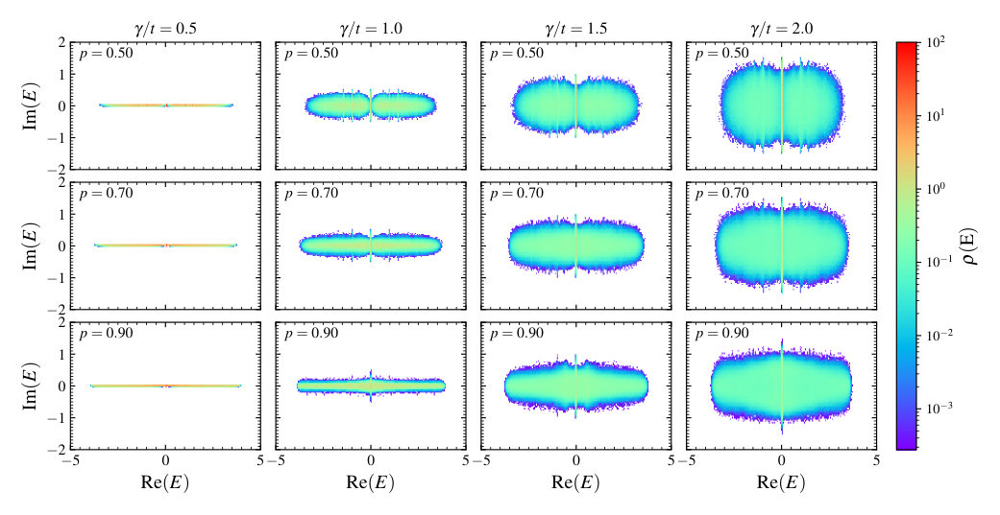
<figcaption class="paper-figure-caption"><b>Fig 1.</b> Figure 1. Density of states (DOS) in the complex energy plane as a function of the occupation probability p (rows) and the on-site disorder strength γ/t (columns), computed for a square lattice of linear size L = 40 over multiple independent disorder realizations.</figcaption>
</figure>
<figure class="paper-figure-card">
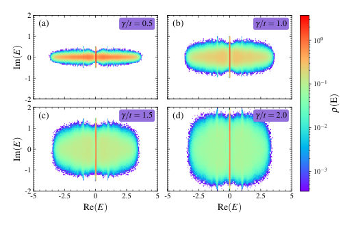
<figcaption class="paper-figure-caption"><b>Fig 2.</b> Figure 2. Density of states in the complex-energy plane for a lattice of size L = 40 with open boundary conditions (OBC) and fixed occupation probability p = 0.70, averaged over many disorder realizations for different on-site disorder strengths.</figcaption>
</figure>
<figure class="paper-figure-card">
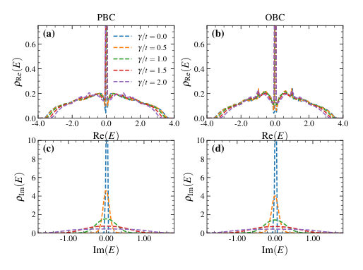
<figcaption class="paper-figure-caption"><b>Fig 3.</b> Figure 3. Density of states projected onto the real and imaginary energy axes for a lattice of size L = 40 and fixed occupation probability p = 0.70, averaged over many disorder realizations for different on-site disorder strengths. The left and right columns correspond to periodic and open boundary conditions, respectively.</figcaption>
</figure>
<figure class="paper-figure-card">
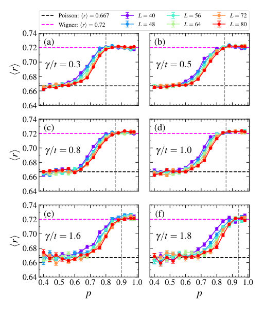
<figcaption class="paper-figure-caption"><b>Fig 4.</b> Figure 4. Mean adjacent-gap ratio ⟨r⟩as a function of the site-occupation probability p for different lattice sizes L and on-site disorder strengths γ/t. The horizontal black dashed lines indicate the Poisson limiting value (⟨r⟩≈0.667), while the pink dashed line represents the Wigner–Dyson limiting value (⟨r⟩≈0.72). These two reference values are associated with spectrally localized and spectrally delocalized regimes, respectively. The vertical grey dashed lines indicate the approximate crossing points of the curves corresponding to different L, which yield an estimate of the quantum percolation threshold pq for each value of γ/t. Error bars are smaller than the symbol size when not...</figcaption>
</figure>
<figure class="paper-figure-card">
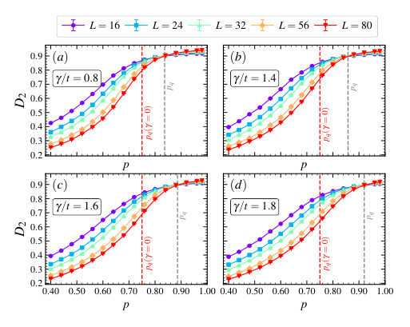
<figcaption class="paper-figure-caption"><b>Fig 5.</b> Figure 6. Approximant fractal dimension D2 as a function of p, for various lattice sizes L and on-site disorder strengths γ/t. The dashed gray vertical line indicates the approximate finite-size crossing point, pq(γ). The dashed red vertical line marks the critical point of the Hermitian system without on- site disorder, pq(γ = 0) ≈0.75, illustrating the shift of the transition induced by the non-Hermitian coupling. When not shown, error bars are smaller than the symbol sizes.</figcaption>
</figure>
</div>

<p><strong>Summary.</strong> This work examines quantum percolation in a 2D lattice subjected to both geometric dilution and non-Hermitian disorder (random gain/loss). Using multifractal analysis, the authors show that the imaginary nature of the disorder significantly alters the localization transition, enhancing the critical multifractal phase without changing the underlying universality class.</p>
<p><strong>Why it may be interesting.</strong> The finding that the imaginary nature of the disorder specifically enhances the multifractal regime while preserving the universality class is highly relevant for understanding open quantum systems where gain and loss are present.</p>
<details>
<summary>Detailed structure</summary>
<p><strong>Main problem.</strong> The study investigates how non-Hermitian disorder modifies the localization properties and multifractal nature of eigenstates in the two-dimensional quantum site-percolation model.</p>
<p><strong>Main result.</strong> Non-Hermitian disorder shifts the quantum percolation threshold ($p_q$) to higher occupation probabilities and enhances the multifractal critical phase, while preserving the universality class of the transition.</p>
<p><strong>Method.</strong> The analysis employs complex level-spacing statistics, participation entropy ($S_q$), and multifractal analysis techniques applied to the system's eigenstates.</p>
<p><strong>Model / system.</strong> The system is a 2D quantum site-percolation model governed by a Hamiltonian incorporating geometric dilution (controlled by occupation probability $p$) and random imaginary on-site potentials ($i\gamma_i$) representing gain/loss.</p>
<p><strong>Key observables.</strong> Complex level-spacing ratio ($\langle r 
angle$), Participation Entropy ($S_q$), Generalized Fractal Dimension ($D_q$), and the quantum percolation threshold ($p_q$).</p>
<p><strong>Important parameters / regimes.</strong> Occupation probability ($p$), Non-Hermiticity strength ($\gamma/t$), Classical percolation threshold ($p_c$), and the localization-length exponent ($
u$).</p>
<p><strong>Assumptions / limitations.</strong> The analysis assumes the Hamiltonian is complex symmetric ($H=H^T$) due to the specific form of the disorder (imaginary on-site potential with real hopping).</p>
<p><strong>Figures summary.</strong> Figure 1 shows the Density of States (DOS) in the complex energy plane, varying $p$ and $\gamma/t$. Other figures/tables compare DOS and scaling exponents for Hermitian vs. Non-Hermitian disorder.</p>
<p><strong>Paper structure.</strong> The paper systematically analyzes the system by first defining the Hamiltonian and diagnostic tools (level spacing, IPR, PE). It then uses finite-size scaling to map out the localization transition, comparing the effects of purely imaginary (non-Hermitian) disorder against real (Hermitian) disorder.</p>
</details>
<details>
<summary>Abstract</summary>
<p>We investigate the interplay between geometric dilution and non-Hermitian disorder in the two-dimensional quantum site-percolation model. Non-Hermiticity is introduced through random imaginary on-site potentials, representing spatially uncorrelated gain and loss, while the hopping amplitudes remain reciprocal. By combining complex level-spacing statistics, participation entropy, and multifractal analysis, we characterize the localization properties of the eigenstates as functions of the disorder and the non-Hermiticity strength. Our finite-size scaling results show that non-Hermitian disorder shifts the quantum percolation threshold ($p_q$) toward larger occupation probabilities. Consequently, the fully delocalized phase is progressively suppressed and disappears at sufficiently strong disorder. This suppression is not a simple consequence of adding on-site disorder of a given strength, but is specifically enhanced by its imaginary character, as an equally strong real (Hermitian) on-site potential produces a weaker shift of $p_q$. Nevertheless, the intermediate region between the classical ($p_c$) and quantum percolation thresholds presents a genuine multifractal critical phase, while the localization-length exponent $ν$ remains the same, relative to its Hermitian value. Altogether, our results demonstrate that random gain and loss enhance the multifractal regime while preserving the universality class of the quantum percolation transition.</p>
</details>
<p><sub><a href="#top">↑ back to top</a></sub></p>

<p><a id="paper-2609.04447"></a></p>
<h3 id="proof-of-principle-long-distance-sagnac-twin-field-quantum-key-distribution-network"><a href="http://arxiv.org/abs/2609.04447v1">Proof-of-principle long-distance Sagnac twin-field quantum key distribution network</a></h3>
<p><strong>Authors:</strong> Reem Mandil, Yen-An Shih, Abhay Verma, Li Qian, Hoi-Kwong Lo<br>
<strong>Type:</strong> experiment · <strong>Category:</strong> quantum information and computing · <strong>PDF:</strong> <a href="https://arxiv.org/pdf/2609.04447v1">https://arxiv.org/pdf/2609.04447v1</a><br>
<strong>Analysis basis:</strong> full PDF text, analyzed in chunks
<strong>Topic relevance:</strong> <code>QC/QI experiment</code> <strong>3/5</strong> · <code>interference shaping light</code> <strong>3/5</strong> · <code>quantum optics experiment</code> <strong>3/5</strong> · <code>quantum measurements</code> <strong>1/5</strong></p>
<div class="figure-strip-hint">↔ Scroll figures horizontally</div>
<div class="paper-figures-scroll">
<figure class="paper-figure-card">
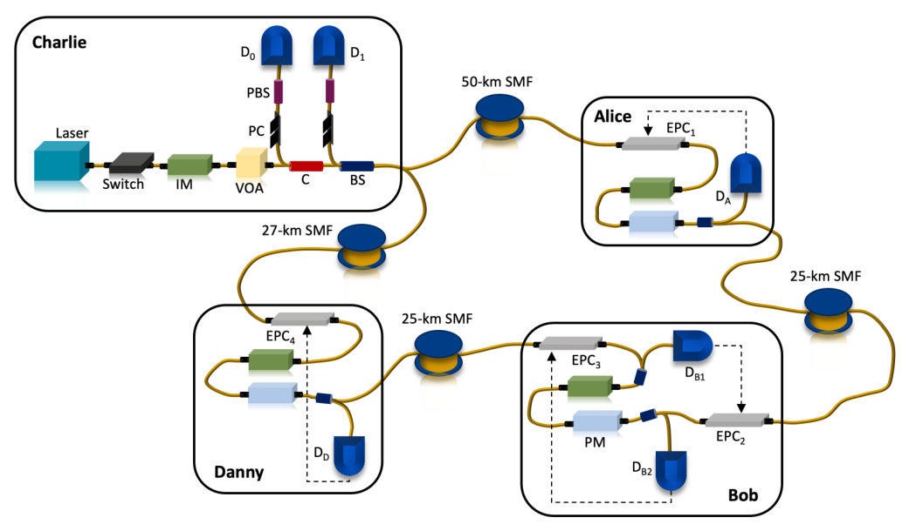
<figcaption class="paper-figure-caption"><b>Fig 1.</b> FIG. 1: Experimental setup of twin-field quantum key distribution network based on a Sagnac interferometer. Charlie passes light from a continuous-wave laser to a 1 × 1 optical switch to generate an on-off burst pattern. An intensity modulator (IM) and variable optical attenuator (VOA) are used to generate pulses that are launched into a fiber ring via a 50:50 beam splitter (BS). Three users (Alice, Bob, and Danny) are connected in the network. Any two users may perform key generation while the third user remains inactive. The active users employ an IM and a phase modulator (PM) to set the intensity and phase of their designated pulses. Interference of the counterpropagating paths is...</figcaption>
</figure>
<figure class="paper-figure-card">
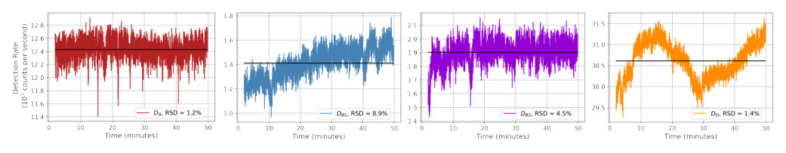
<figcaption class="paper-figure-caption"><b>Fig 2.</b> FIG. 2: Counts registered at single-photon detectors DA, DB1, DB2, and DD during one hour of active polarization control. DA and DB1 are used to monitor the clockwise traveling light. DD and DB2 are used to monitor the counterclockwise traveling light. The mean (solid line) and standard deviation are given in counts per second by DA: 12430 ± 150; DB1: 1410 ± 120; DB2: 1900 ± 90; DD: 30610 ± 430.</figcaption>
</figure>
<figure class="paper-figure-card">
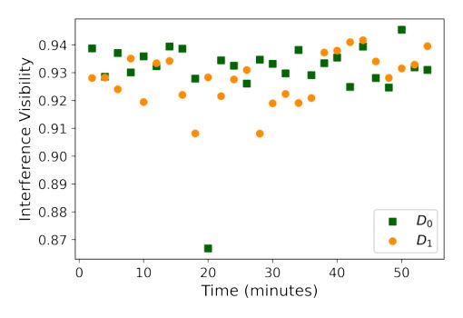
<figcaption class="paper-figure-caption"><b>Fig 3.</b> FIG. 3: Sagnac interference visibility in detectors D0 and D1 over one hour with active polarization control.</figcaption>
</figure>
<figure class="paper-figure-card">
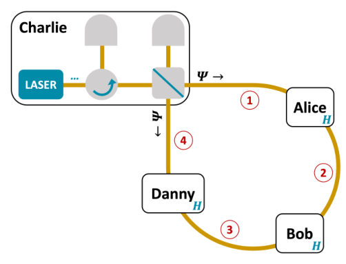
<figcaption class="paper-figure-caption"><b>Fig 4.</b> FIG. 4: Schematic diagram of Sagnac twin-field quantum key distribution network. Each user station acts as a linear polarizer with the polarization denoted H. The polarization launched into the Sagnac loop is denoted Ψ. The four fiber segments connecting stations are labeled numerically.</figcaption>
</figure>
<figure class="paper-figure-card">
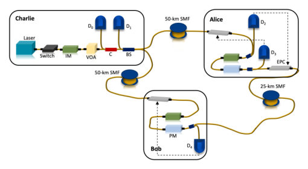
<figcaption class="paper-figure-caption"><b>Fig 5.</b> FIG. 5: Experimental setup of two-user Sagnac twin-field quantum key distribution. IM: intensity modulator; VOA: variable optical attenuator; C: circulator; BS: beam splitter; PM: phase modulator; EPC: electronic polarization controller.</figcaption>
</figure>
</div>

<p><strong>Summary.</strong> This paper reports the experimental realization of a three-user-pair Sagnac Twin-Field QKD network spanning 127-km. By using a Sagnac configuration, the system achieves long-distance quantum key distribution without complex active phase stabilization. The results demonstrate a highly practical and cost-effective method for building scalable quantum communication networks.</p>
<p><strong>Why it may be interesting.</strong> This work provides a robust, hardware-efficient demonstration of multi-user quantum networking over metropolitan distances, which is crucial for realizing quantum internet infrastructure.</p>
<details>
<summary>Detailed structure</summary>
<p><strong>Main problem.</strong> The primary challenge is developing a practical, cost-effective, and long-distance Quantum Key Distribution (QKD) network capable of supporting multiple users.</p>
<p><strong>Main result.</strong> The authors experimentally demonstrated a proof-of-principle three-user-pair Sagnac TFQKD network spanning 127-km, achieving a stable key rate of $1.398	imes10^{-5}$ bits per pulse.</p>
<p><strong>Method.</strong> The experiment utilizes the Twin-Field QKD protocol implemented in a Sagnac interferometer setup, which inherently avoids the need for active phase stabilization or postcompensation.</p>
<p><strong>Model / system.</strong> The system is a three-user-pair network connected by long, lossy optical fibers, employing single-photon avalanche detectors (SPADs) and a Sagnac loop configuration for interference.</p>
<p><strong>Key observables.</strong> Stable Sagnac interference visibility ($93\pm1\%$), Quantum Bit Error Rate (QBER), and secure key rate (e.g., $1.398	imes10^{-5}$ bits per pulse).</p>
<p><strong>Important parameters / regimes.</strong> Total network length of 127-km, overall loss of 45-dB, and the use of single-photon detectors.</p>
<p><strong>Assumptions / limitations.</strong> The setup operates without active phase stabilization or postcompensation, representing a highly practical and cost-effective approach.</p>
<p><strong>Figures summary.</strong> Figures illustrate the experimental setup, showing stable intensity readings over time, and tracking the Sagnac interference visibility over an hour.</p>
<p><strong>Paper structure.</strong> The paper details the experimental setup, demonstrates long-term stability measurements (visibility, intensity), quantifies key rates for multiple user pairs, and compares results to previous two-user demonstrations.</p>
</details>
<details>
<summary>Abstract</summary>
<p>Twin-field (TF) quantum key distribution (QKD) offers a promising approach to long-distance QKD networks due to its superior performance over large channel losses. Due to specialized hardware requirements, nearly all long-distance TFQKD demonstrations have only two users exchanging keys, rather than a network with three or more users. In this work, we experimentally demonstrate a proof-of-principle three-user-pair Sagnac TFQKD network spanning 127-km using single-photon avalanche detectors without any active phase stabilization or postcompensation. We implement efficient procedures for maintaining polarization stability and circumventing Rayleigh backscattering noise to achieve a stable Sagnac interference visibility of $93\pm1$% over one hour. A secure key rate of $1.398\times10^{-5}$ bits per pulse is achieved over an asymmetric communication channel with 102-km fiber and 45-dB overall loss. To our knowledge, this is the first TFQKD network without active phase stabilization or postcompensation achieved over long fibers. Our results represent a highly practical and cost-effective approach to long-distance QKD networks.</p>
</details>
<p><sub><a href="#top">↑ back to top</a></sub></p>

<p><a id="paper-2609.04459"></a></p>
<h3 id="efficient-quantum-error-correction-from-three-dimensional-qubit-control"><a href="http://arxiv.org/abs/2609.04459v1">Efficient Quantum Error Correction from Three Dimensional Qubit Control</a></h3>
<p><strong>Authors:</strong> Kevin Yipu Wu, Ohik Kwon, Maxwell F. Parsons<br>
<strong>Type:</strong> theory · <strong>Category:</strong> quantum information and computing · <strong>PDF:</strong> <a href="https://arxiv.org/pdf/2609.04459v1">https://arxiv.org/pdf/2609.04459v1</a><br>
<strong>Analysis basis:</strong> full PDF text, analyzed in chunks
<strong>Topic relevance:</strong> <code>QC/QI experiment</code> <strong>3/5</strong> · <code>Rydberg arrays</code> <strong>3/5</strong> · <code>analog quantum simulation</code> <strong>1/5</strong> · <code>quantum measurements</code> <strong>1/5</strong></p>
<div class="figure-strip-hint">↔ Scroll figures horizontally</div>
<div class="paper-figures-scroll">
<figure class="paper-figure-card">
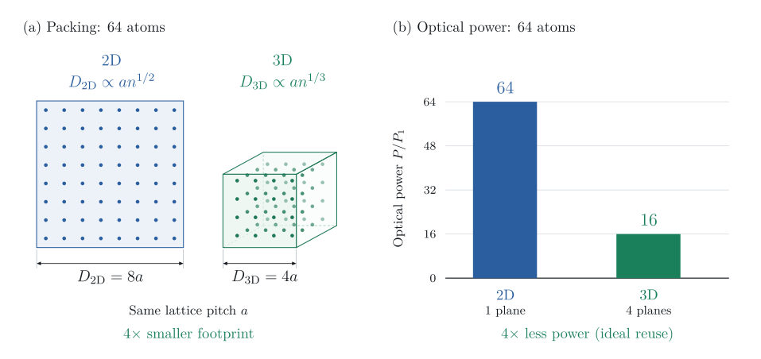
<figcaption class="paper-figure-caption"><b>Fig 1.</b> Figure 1. Packing and ideal optical-power benefits of 3D atom arrays. (a) At equal lattice pitch</figcaption>
</figure>
<figure class="paper-figure-card">
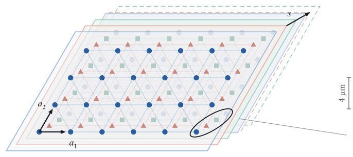
<figcaption class="paper-figure-caption"><b>Fig 2.</b> Figure 2. Schematic of triangular 3D layout with four layers leading to efficient implementation</figcaption>
</figure>
<figure class="paper-figure-card">
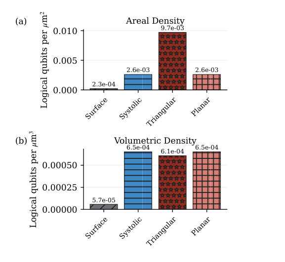
<figcaption class="paper-figure-caption"><b>Fig 3.</b> Figure 3. Spatial-footprint comparison for twelve logical qubits encoded using a planar distance-</figcaption>
</figure>
<figure class="paper-figure-card">
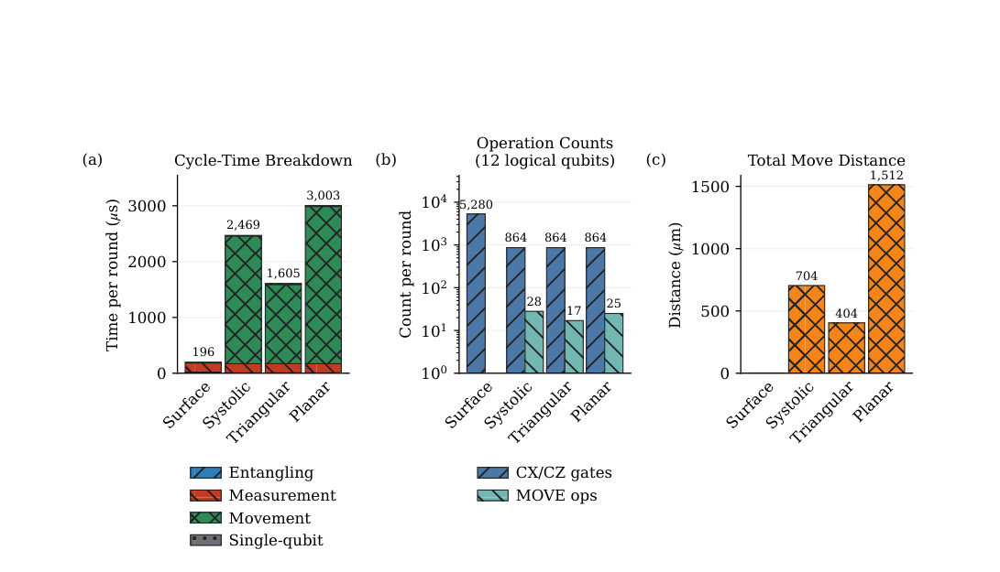
<figcaption class="paper-figure-caption"><b>Fig 4.</b> Figure 4. Syndrome-extraction schedule comparison for twelve planar distance-11 surface-code</figcaption>
</figure>
<figure class="paper-figure-card">
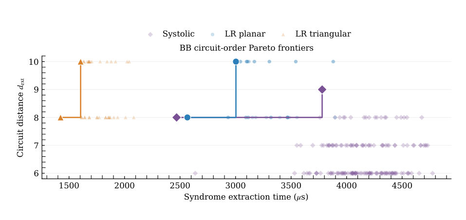
<figcaption class="paper-figure-caption"><b>Fig 5.</b> Figure 5. Trade-off between syndrome-extraction time and extended-code distance dext for systolic,</figcaption>
</figure>
</div>

<p><strong>Summary.</strong> This paper demonstrates that leveraging native three-dimensional geometry in neutral-atom quantum processors dramatically improves the feasibility of implementing high-rate quantum error correction codes. By comparing 2D planar layouts to 3D embeddings, the authors show that 3D control boosts qubit packing density and reduces syndrome extraction time, making scalable fault-tolerant quantum computing more physically viable.</p>
<p><strong>Why it may be interesting.</strong> It provides concrete, quantitative architectural guidelines for realizing complex quantum error correction codes, directly informing the hardware requirements for fault-tolerant quantum computation using neutral atoms.</p>
<details>
<summary>Detailed structure</summary>
<p><strong>Main problem.</strong> The primary challenge is reducing the overhead (qubit count, control complexity, and execution time) associated with implementing Quantum Error Correction (QEC) codes for scalable quantum computation.</p>
<p><strong>Main result.</strong> Implementing nonlocal qLDPC codes using native three-dimensional (3D) geometry yields significantly higher logical-qubit density (up to 42x better than surface codes) and reduces syndrome-extraction time compared to planar layouts.</p>
<p><strong>Method.</strong> The authors compare planar (2D) versus 3D embeddings of a fixed qLDPC code (the [[144, 12, 12]] bivariate bicycle code) by simulating syndrome extraction schedules and calculating spatial and temporal resource metrics.</p>
<p><strong>Model / system.</strong> The work models quantum computation on neutral-atom quantum processors using optical tweezer arrays, specifically focusing on the physical realization of nonlocal syndrome extraction circuits.</p>
<p><strong>Key observables.</strong> Logical-qubit density (logical qubits per unit spatial footprint), syndrome-extraction time, and logical error rates.</p>
<p><strong>Important parameters / regimes.</strong> Code structure (e.g., [[144, 12, 12]]), lattice spacing, and the ratio of 3D vs. 2D embedding efficiency.</p>
<p><strong>Assumptions / limitations.</strong> The 3D architecture is an extrapolation, assuming programmable, collision-free atom transport and simultaneous multi-layer measurements, which are not yet demonstrated.</p>
<p><strong>Figures summary.</strong> Figures compare packing benefits of 3D vs. 2D arrays and show trade-offs between syndrome-extraction time and extended-code distance for different layouts.</p>
<p><strong>Paper structure.</strong> The paper systematically compares scheduling algorithms and resource requirements for different physical embeddings (planar vs. 3D) of the same error-correcting code, culminating in a quantitative demonstration of 3D advantages.</p>
</details>
<details>
<summary>Abstract</summary>
<p>High-rate quantum low-density parity-check (qLDPC) codes can substantially reduce qubit overhead relative to surface codes, but their advantage depends on efficiently realizing nonlocal syndrome extraction. We study the \([[144,12,12]]\) bivariate bicycle code on a neutral-atom architecture with native three-dimensional (3D) geometry, comparing planar and 3D embeddings while holding the code fixed. We characterize spatial efficiency using the logical-qubit density, defined as the number of encoded logical qubits per unit spatial footprint. Because the optical controller's field of view limits the transverse extent of an array, this metric estimates the number of logical qubits that can be accommodated within a fixed optical field of view. The 3D embedding achieves approximately \(4\times\) greater areal logical-qubit density than the planar layout and \(42\times\) greater than a surface-code baseline. It also reduces the bivariate bicycle syndrome-extraction time by roughly \(2\times\) compared to a planar baseline, with fewer movement operations and substantially shorter atom-transport distance. Native 3D geometry can improve both the packing density and executable realization of nonlocal qLDPC codes, making practical performance depend jointly on code structure, optical geometry, transport scheduling, and hardware-level noise. This motivates further development of control techniques in 3D.</p>
</details>
<p><sub><a href="#top">↑ back to top</a></sub></p>

<p><a id="paper-2609.04423"></a></p>
<h3 id="on-quasiparticles-within-the-refined-gribov-zwanziger-model"><a href="http://arxiv.org/abs/2609.04423v1">On Quasiparticles within the Refined Gribov-Zwanziger Model</a></h3>
<p><strong>Authors:</strong> Felipe F. Garcia, Marcio A. L. Capri, Bruno W. Mintz<br>
<strong>Type:</strong> theory · <strong>Category:</strong> other · <strong>PDF:</strong> <a href="https://arxiv.org/pdf/2609.04423v1">https://arxiv.org/pdf/2609.04423v1</a><br>
<strong>Analysis basis:</strong> full PDF text, analyzed in chunks
<strong>Topic relevance:</strong> <code>Keldysh / 2PI / non-Gaussian methods</code> <strong>3/5</strong> · <code>methods for driven-dissipative</code> <strong>3/5</strong> · <code>analog quantum simulation</code> <strong>1/5</strong> · <code>quantum measurements</code> <strong>1/5</strong></p>
<div class="figure-strip-hint">↔ Scroll figures horizontally</div>
<div class="paper-figures-scroll">
<figure class="paper-figure-card">
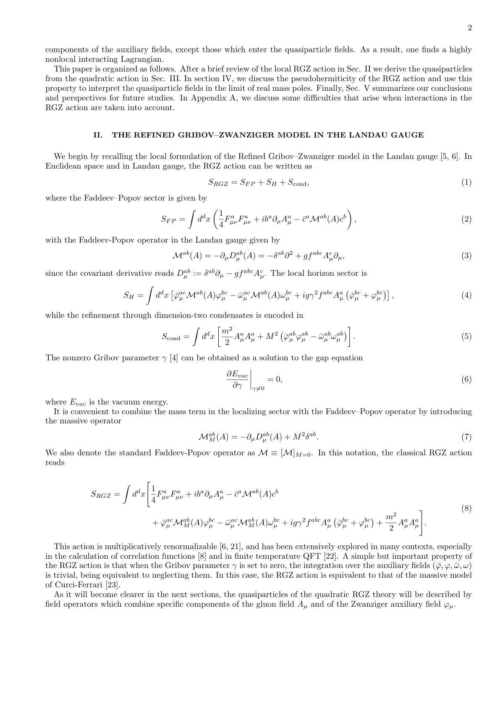
<figcaption class="paper-figure-caption"><b>Fig 1.</b> Low-resolution page preview, page 2</figcaption>
</figure>
<figure class="paper-figure-card">
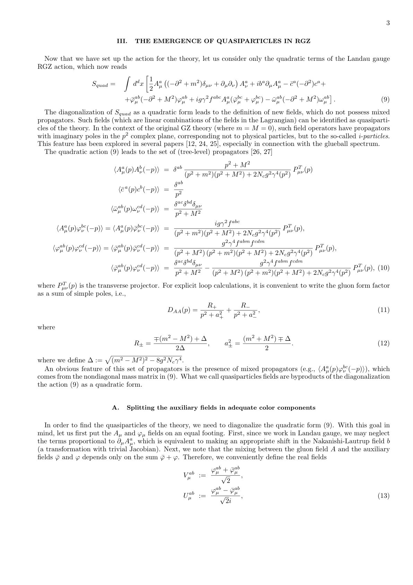
<figcaption class="paper-figure-caption"><b>Fig 2.</b> Low-resolution page preview, page 3</figcaption>
</figure>
<figure class="paper-figure-card">
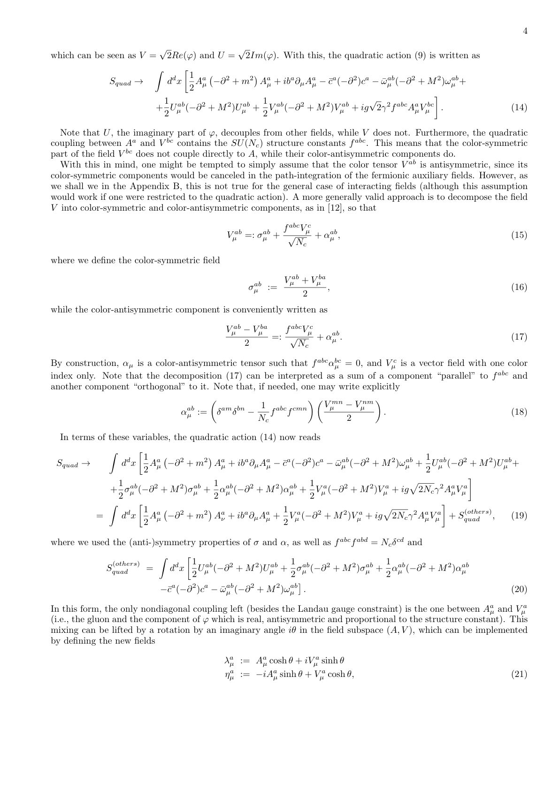
<figcaption class="paper-figure-caption"><b>Fig 3.</b> Low-resolution page preview, page 4</figcaption>
</figure>
<figure class="paper-figure-card">
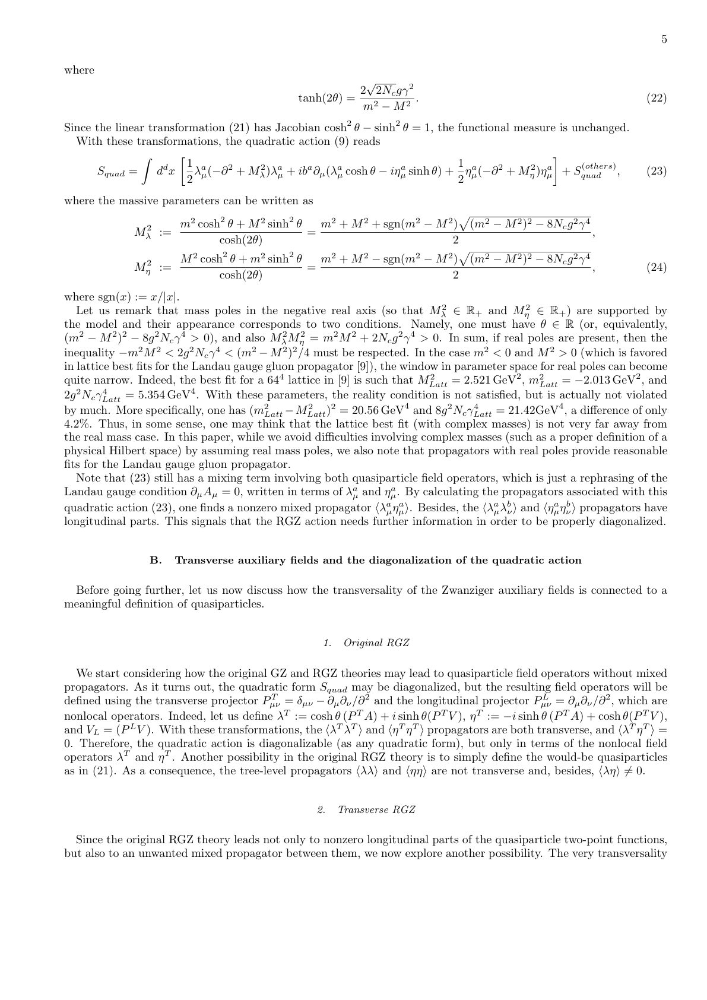
<figcaption class="paper-figure-caption"><b>Fig 4.</b> Low-resolution page preview, page 5</figcaption>
</figure>
<figure class="paper-figure-card">
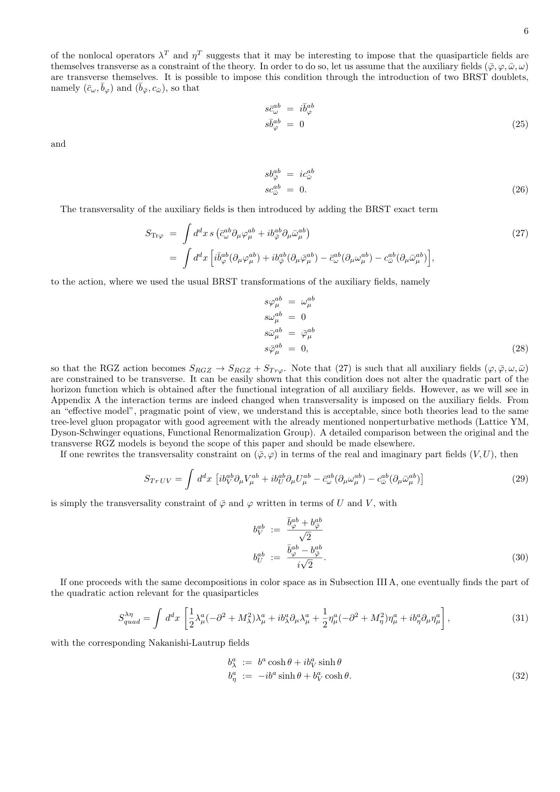
<figcaption class="paper-figure-caption"><b>Fig 5.</b> Low-resolution page preview, page 6</figcaption>
</figure>
</div>

<p><strong>Summary.</strong> This theoretical paper investigates the quasiparticle excitations within the Refined Gribov-Zwanziger model for pure Yang-Mills theories. By diagonalizing the quadratic action, the authors derive the propagators for these quasiparticles. The work provides a framework for understanding the nonperturbative structure of gauge theories by ensuring the resulting spectral functions are physically well-behaved for real mass poles.</p>
<p><strong>Why it may be interesting.</strong> While focused on gauge theory, the rigorous mathematical techniques of diagonalizing complex quadratic actions and analyzing spectral functions for physical poles are highly relevant to understanding effective Hamiltonians in strongly coupled quantum systems.</p>
<details>
<summary>Detailed structure</summary>
<p><strong>Main problem.</strong> The paper addresses the fundamental challenge of understanding the effective excitations (quasiparticles) of gauge theories in the nonperturbative regime, particularly concerning confinement.</p>
<p><strong>Main result.</strong> The authors propose a novel interpretation for quasiparticles derived from the Refined Gribov-Zwanziger (RGZ) model, showing that for real mass poles, the resulting field operators yield a well-defined, positive spectral function.</p>
<p><strong>Method.</strong> The primary method involves analyzing the quadratic action derived from the RGZ Lagrangian, diagonalizing this action, and imposing transversality constraints to simplify the resulting propagators.</p>
<p><strong>Model / system.</strong> The study uses the Refined Gribov-Zwanziger (RGZ) theory as an effective model for pure gauge Yang-Mills theories, focusing on the behavior of gluon propagators.</p>
<p><strong>Key observables.</strong> Gluon propagator poles, spectral functions ($
ho_{\lambda\lambda}(s)$, $
ho_{\eta\eta}(s)$), and the structure of quasiparticle propagators.</p>
<p><strong>Important parameters / regimes.</strong> Real mass poles ($p^2 = -M^2 \pm < 0$), the coupling constant $g$, and the mass parameters $m^2$ and $M^2$ within the RGZ model.</p>
<p><strong>Assumptions / limitations.</strong> The analysis is restricted to the case of real mass poles, avoiding the mathematical complexities associated with complex mass poles, and often relies on imposing transversality constraints (Transverse RGZ model).</p>
<p><strong>Paper structure.</strong> The paper progresses by establishing the RGZ action, simplifying it by diagonalizing the quadratic form, and further refining the analysis by imposing transversality constraints to obtain a fully diagonal quadratic action for the quasiparticle propagators.</p>
</details>
<details>
<summary>Abstract</summary>
<p>The problem of the effective excitations of a gauge theory in the nonperturbative regime remains not completely understood. Using the Refined Gribov-Zwanziger (RGZ) theory as effective model for pure gauge Yang-Mills theories, we revisit the quasiparticle (quadratic) excitations of the theory. A novel interpretation of such quasiparticles is proposed, in the case of real mass poles, taking into account the manifest ${\cal PT}-$symmetry of the RGZ Lagrangian.</p>
</details>
<p><sub><a href="#top">↑ back to top</a></sub></p>

<p><a id="paper-2609.05159"></a></p>
<h3 id="glassy-dynamics-crossover-temperature-and-density-scaling-in-fragile-glass-formers"><a href="http://arxiv.org/abs/2609.05159v1">Glassy dynamics, crossover temperature and density scaling in fragile glass-formers</a></h3>
<p><strong>Authors:</strong> Ankit Singh, Vinay Vaibhav, Swarn Lata Singh, Yashwant Singh<br>
<strong>Type:</strong> both · <strong>Category:</strong> disordered systems and neural networks · <strong>PDF:</strong> <a href="https://arxiv.org/pdf/2609.05159v1">https://arxiv.org/pdf/2609.05159v1</a><br>
<strong>Analysis basis:</strong> full PDF text, analyzed in chunks
<strong>Topic relevance:</strong> <code>non-equilibrium universality</code> <strong>3/5</strong> · <code>scars &amp; prethermalization</code> <strong>3/5</strong> · <code>analog quantum simulation</code> <strong>1/5</strong></p>
<div class="figure-strip-hint">↔ Scroll figures horizontally</div>
<div class="paper-figures-scroll">
<figure class="paper-figure-card">
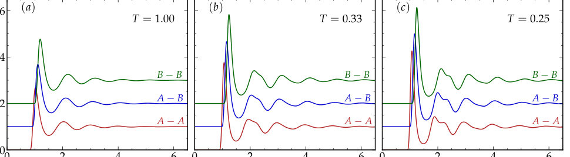
<figcaption class="paper-figure-caption"><b>Fig 1.</b> FIG. 1. Partial radial distribution functions gαγ(r) for A–A, A–B, and B–B correlations at density ρ = 0.80 for temperatures (a) T = 1.00, (b) T = 0.33, and (c) T = 0.25. For clarity, the gAB(r) and gBB(r) curves are vertically shifted upward by 1 and 2 units, respectively.</figcaption>
</figure>
<figure class="paper-figure-card">
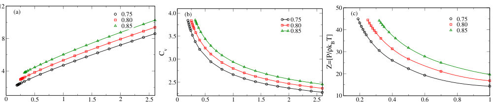
<figcaption class="paper-figure-caption"><b>Fig 2.</b> FIG. 2. (a) Internal energy per particle, U(T), plotted as a function of temperature, T, for three densities, ρ = 0.75, 0.80, and 0.85. The symbols represent the calculated values, while the lines show fits to the algebraic relation [48], U(T) = 3</figcaption>
</figure>
<figure class="paper-figure-card">
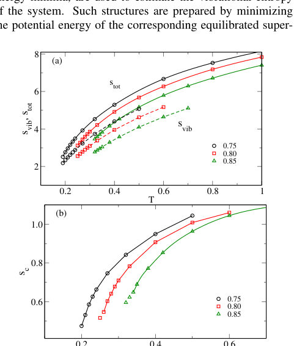
<figcaption class="paper-figure-caption"><b>Fig 3.</b> FIG. 3. Temperature dependence of the total entropy per particle stot = Stot/N (solid lines with open symbols) and vibrational entropy per particle svib = Svib/N (dashed lines with open symbols) for densi- ties ρ = 0.75, 0.80, and 0.85 (as indicated) in (a). The corresponding configurational entropy per particle sc as a function of temperature T in (b).</figcaption>
</figure>
<figure class="paper-figure-card">
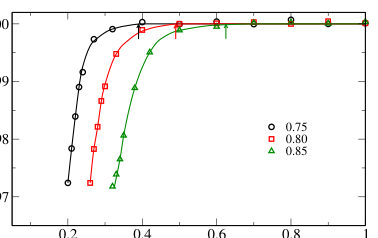
<figcaption class="paper-figure-caption"><b>Fig 4.</b> FIG. 4. Normalized inherent structure energy ¯eIS plotted as function of temperature T for the densities ρ = 0.75,0.80, and 0.85. Sym- bols represent the calculated values, while the solid lines represent the corresponding least square fit. The arrow indicates the crossover temperature TIS for different densities, which are listed in Table I.</figcaption>
</figure>
<figure class="paper-figure-card">
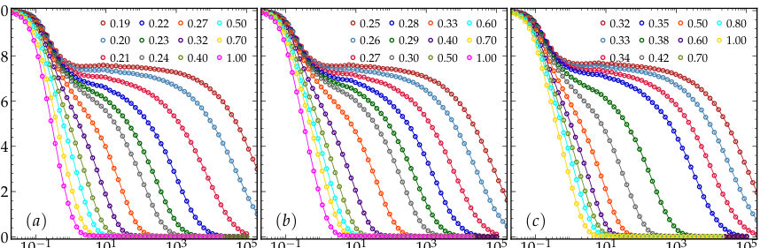
<figcaption class="paper-figure-caption"><b>Fig 5.</b> FIG. 5. Self-intermediate scattering function Fs(q,t) at q = 6.5 plotted as a function of time t for the indicated temperatures. The upper panels (a-c) correspond to densities ρ = 0.75, 0.80, and 0.85, respectively. The lower panels (d–f) show the corresponding time evolution of tF′s (q,t). Solid lines represent sixth-order polynomial fits to the derivative data.</figcaption>
</figure>
</div>

<p><strong>Summary.</strong> This work analyzes the dynamics of glass-forming liquids interacting via an IPL potential, showing that the slowing down of relaxation is governed by universal scaling laws. By combining molecular dynamics simulations with theory, the authors establish a unified description of both the thermodynamics and dynamics across varying densities and temperatures. This provides a powerful tool for predicting glassy behavior over wide parameter ranges.</p>
<p><strong>Why it may be interesting.</strong> The concepts of structural arrest, scaling laws, and the role of local structural order (CRC) in determining macroscopic dynamics are fundamental to understanding complex many-body systems, which has parallels in quantum many-body physics.</p>
<details>
<summary>Detailed structure</summary>
<p><strong>Main problem.</strong> The paper investigates the slowing down of dynamics and structural relaxation in glass-forming mixtures as they approach the glass transition.</p>
<p><strong>Main result.</strong> The relaxation dynamics obey density-temperature scaling, and the structural relaxation time is successfully described by a theoretical framework involving a crossover temperature and a fluctuation-induced parameter.</p>
<p><strong>Method.</strong> The study combines large-scale Molecular Dynamics simulations with theoretical calculations to analyze structural and dynamic properties.</p>
<p><strong>Model / system.</strong> The system modeled is a binary mixture interacting via an Inverse-Power-Law (IPL) potential, simulating supercooled liquids or fragile glass-formers.</p>
<p><strong>Key observables.</strong> Static pair-correlation function, configurational entropy, inherent-structure energy, and structural relaxation time ($\tau_\alpha$).</p>
<p><strong>Important parameters / regimes.</strong> Density ($\rho$), Temperature ($T$), and the crossover temperature ($T_a$).</p>
<p><strong>Assumptions / limitations.</strong> The theory identifies a 'cooperatively rearranging cluster' (CRC) as the key structural element governing the slowing down of dynamics.</p>
<p><strong>Figures summary.</strong> Figures show partial radial distribution functions ($g_{\alpha\gamma}(r)$) indicating structural rigidity upon cooling, and plots demonstrating data collapse onto master curves using scaling variables.</p>
<p><strong>Paper structure.</strong> The paper progresses by establishing the theoretical framework for relaxation time, calculating various thermodynamic and structural observables via simulation, and finally demonstrating that both dynamic and thermodynamic quantities collapse onto universal master curves via density-temperature scaling.</p>
</details>
<details>
<summary>Abstract</summary>
<p>We investigate the slowing down of dynamics in a glass-forming mixture interacting via an inverse-power-law (IPL) potential using a combination of theory and large-scale molecular dynamics simulations. We measure the static pair-correlation function, configurational entropy, inherent-structure energy, and structural relaxation time. We employ a theoretical framework to calculate the structural relaxation time $τ_α$, which is found to be in very good agreement with the simulation results. The theory identifies a local structural order which defines the cooperativity of the relaxation and brings forth a fluctuation induced parameter $ψ( T )$ and a crossover temperature $T_a$ that characterize the density and temperature dependence of the glassy dynamics. Furthermore, we determine a crossover temperature using independent dynamical and thermodynamic criteria and compare with the theoretically predicted crossover temperature $T_a$. Relaxation dynamics is shown to obey density-temperature scaling, similar to thermodynamic properties, in terms of a variable $Γ$ formed by an appropriate combination of density and temperature, characteristic of IPL interactions. Finally, we show that, when the excess thermodynamic and dynamic quantities obtained at different densities are plotted as functions of the reduced temperature $T/T_a$ (or $T_a/T$), the data collapse onto master curves with excellent agreement between theory and simulation. These scaling relations provide a unified description of the thermodynamics and dynamics in IPL systems, enabling the prediction of relaxation behavior over a wide range of densities from data at a single state point.</p>
</details>
<p><sub><a href="#top">↑ back to top</a></sub></p>

<p><a id="paper-2609.05344"></a></p>
<h3 id="how-dipolar-interactions-structure-molecular-droplets"><a href="http://arxiv.org/abs/2609.05344v1">How dipolar interactions structure molecular droplets</a></h3>
<p><strong>Authors:</strong> Wiiliam Freitas, Panagiotis Giannakeas, Jan M. Rost<br>
<strong>Type:</strong> theory · <strong>Category:</strong> other · <strong>PDF:</strong> <a href="https://arxiv.org/pdf/2609.05344v1">https://arxiv.org/pdf/2609.05344v1</a><br>
<strong>Analysis basis:</strong> full PDF text, analyzed in chunks
<strong>Topic relevance:</strong> <code>analog quantum simulation</code> <strong>3/5</strong> · <code>Keldysh / 2PI / non-Gaussian methods</code> <strong>2/5</strong> · <code>methods for driven-dissipative</code> <strong>2/5</strong></p>
<div class="figure-strip-hint">↔ Scroll figures horizontally</div>
<div class="paper-figures-scroll">
<figure class="paper-figure-card">
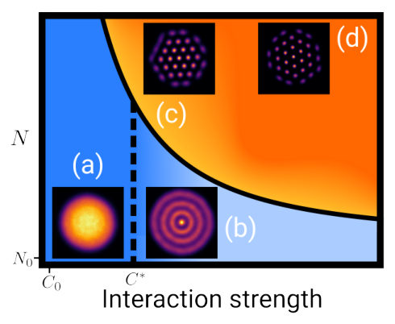
<figcaption class="paper-figure-caption"><b>Fig 1.</b> Figure 1. Illustration of ground state geometries with their de- pendence on system size N and interaction strength C. The solid black line marks the transition boundary between the droplet (blue) and crystal (orange) states; color gradients in- dicate smooth structural changes. C∗denotes the interaction strength, where the first dimer state occurs. The origins of the axes are given by N0 = 20 and C0 = 8.</figcaption>
</figure>
<figure class="paper-figure-card">
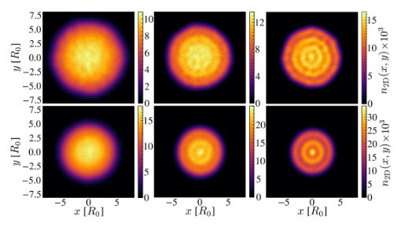
<figcaption class="paper-figure-caption"><b>Fig 2.</b> Figure 2. Gradual formation of radial modulations with in- creasing interaction C for droplets containing N = 37 (top row) and N = 19 (bottom row) molecules. From left to right, the panels correspond to C = 10, 15, and 20. Note that the potential supports at least one dimer state for C &gt; C∗= 12.3.</figcaption>
</figure>
<figure class="paper-figure-card">
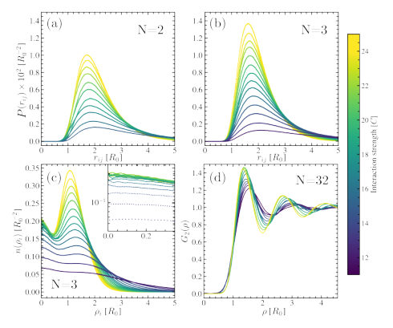
<figcaption class="paper-figure-caption"><b>Fig 3.</b> Figure 3. Correlated molecular densities; (a) and (b): pair</figcaption>
</figure>
<figure class="paper-figure-card">
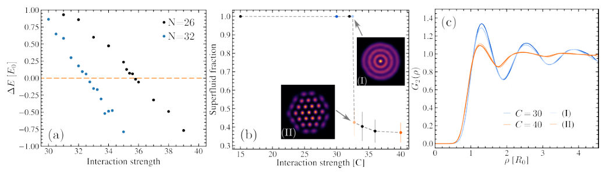
<figcaption class="paper-figure-caption"><b>Fig 4.</b> Figure 4. Structural changes across the transition form droplet to crystal as function of interaction strength C: (a) difference of droplet-ring and crystal energies from pair simulation, see text; (b) superfluid fraction (see text) and density profiles immediately before (I) and after (II) the transition for N=32; (c) density-density correlation G2(ρ) from (5) for selected C values and N=32.</figcaption>
</figure>
</div>

<p><strong>Summary.</strong> This paper uses advanced Variational Monte Carlo methods with Neural Quantum States to study how dipolar interactions organize molecular droplets. The authors distinguish between two types of structural changes: a smooth crossover to ring states and a sharp, first-order transition into a crystal phase. This work provides a detailed theoretical roadmap for understanding quantum matter under strong, anisotropic interactions.</p>
<p><strong>Why it may be interesting.</strong> This work provides a detailed theoretical understanding of structural phase transitions in dipolar quantum gases, bridging the gap between liquid-like droplets and ordered crystalline phases using advanced quantum many-body techniques.</p>
<details>
<summary>Detailed structure</summary>
<p><strong>Main problem.</strong> The study investigates how dipolar interactions structure self-bound molecular droplets and characterizes the nature of the transition from these droplets to crystalline phases.</p>
<p><strong>Main result.</strong> The transition from droplet to crystal is identified as a finite-size first-order phase transition, while the transition to droplet-ring states is characterized as a smooth crossover.</p>
<p><strong>Method.</strong> The research employs a Variational Monte Carlo (VMC) framework utilizing Neural Quantum States (NQS) to accurately describe the strongly correlated ground states of the system.</p>
<p><strong>Model / system.</strong> The system consists of microwave-shielded polar molecules (MSPMs) forming self-bound droplets, governed by an N-body Hamiltonian incorporating long-range dipolar interactions. The effective potential is explicitly defined based on molecular geometry.</p>
<p><strong>Key observables.</strong> Superfluid fraction, density-density correlations ($G_2(
ho)$), pair densities (dimers/trimers), and the energy difference ($\Delta E$) between droplet-ring and crystal states.</p>
<p><strong>Important parameters / regimes.</strong> Interaction strength ($C$), number of molecules ($N$), and the critical interaction strength ($C^*$) marking the initial dimer state.</p>
<p><strong>Assumptions / limitations.</strong> The analysis relies on the VMC framework with NQS to capture complex correlations, and the superfluid fraction calculation uses linear-response theory.</p>
<p><strong>Figures summary.</strong> Figures illustrate the structural sequence (droplet $  o$ ring $   o$ crystal), showing abrupt changes in superfluid fraction and density correlations across the first-order transition point, contrasted with smooth changes during the crossover.</p>
<p><strong>Paper structure.</strong> The paper systematically analyzes the system by first identifying the Hamiltonian and key parameters, then using VMC/NQS to map out the structural sequence. It distinguishes between the smooth crossover (droplet-ring) and the first-order transition (droplet-crystal) by analyzing multiple observables like superfluid fraction and correlation functions.</p>
</details>
<details>
<summary>Abstract</summary>
<p>We investigate how dipolar interactions between microwave-shielded polar molecules structure the self-bound droplets formed under variation of the interaction strength. We identify the transition from droplets to crystals as a finite-size first order transition. With droplet-ring states and transitional supersolid states we predict additional structure in the crystal and droplet phases, respectively. To describe this strongly correlated regime, and in particular the reconfiguration of quantum ground states, we design a variational Monte Carlo framework based on neural quantum states. It is especially suitable to describe ground states and almost degenerate states with very different configurations. Moreover, one can easily determine the superfluid fraction. Our results reveal the sequence of finite-size structures through which dipolar interactions reorganize molecular droplets into crystals.</p>
</details>
<p><sub><a href="#top">↑ back to top</a></sub></p>

<p><a id="paper-2609.05336"></a></p>
<h3 id="infrared-memory-and-scrambling-in-a-dynamically-opened-coupled-syk-majorana-junction"><a href="http://arxiv.org/abs/2609.05336v1">Infrared Memory and Scrambling in a Dynamically Opened Coupled-SYK Majorana Junction</a></h3>
<p><strong>Authors:</strong> Ali Vahedi<br>
<strong>Type:</strong> theory · <strong>Category:</strong> strongly correlated electrons · <strong>PDF:</strong> <a href="https://arxiv.org/pdf/2609.05336v1">https://arxiv.org/pdf/2609.05336v1</a><br>
<strong>Analysis basis:</strong> full PDF text, analyzed in chunks
<strong>Topic relevance:</strong> <code>Keldysh / 2PI / non-Gaussian methods</code> <strong>3/5</strong> · <code>correlated / nonlocal dissipation</code> <strong>1/5</strong> · <code>methods for driven-dissipative</code> <strong>1/5</strong> · <code>non-equilibrium universality</code> <strong>1/5</strong> · <code>scars &amp; prethermalization</code> <strong>1/5</strong></p>
<div class="figure-strip-hint">↔ Scroll figures horizontally</div>
<div class="paper-figures-scroll">
<figure class="paper-figure-card">
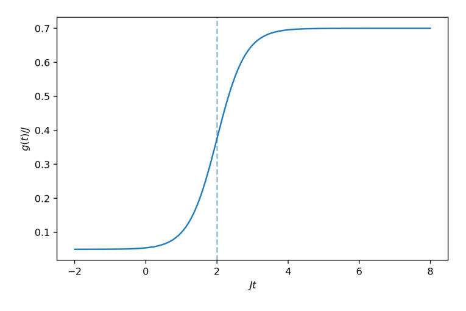
<figcaption class="paper-figure-caption"><b>Fig 1.</b> Figure 1: Smooth shutter protocol used in the finite-N calculations. The coupling rises from gcl = 0.05J to gop = 0.70J with Jt0 = 2 and τJ = 0.8. The labels “closed” and “open” are operational rather than universal thresholds.</figcaption>
</figure>
<figure class="paper-figure-card">
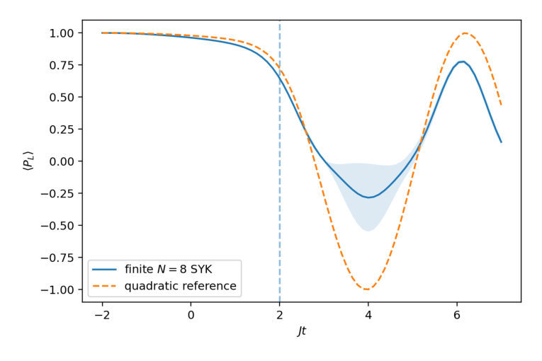
<figcaption class="paper-figure-caption"><b>Fig 2.</b> Figure 2: Normalized left parity PL(t) for the finite-N interacting shutter and the quadratic reference. The curves are obtained directly from ⟨PL(t)⟩/⟨PL(ti)⟩during the exact time evolution. The normalization removes the realization-dependent sign of the initial left parity, so every curve begins at +1.</figcaption>
</figure>
<figure class="paper-figure-card">
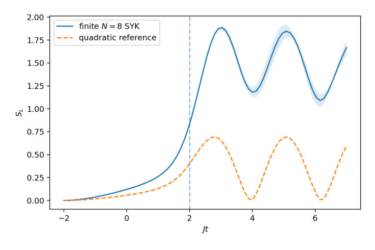
<figcaption class="paper-figure-caption"><b>Fig 3.</b> Figure 3: Left-right von Neumann entropy obtained from the exact reduced density matrix during the N = 8 evolution. At each time the full state is traced over the right SYK cluster. The SYK interaction populates substantially more entanglement sectors than the corresponding one-particle quadratic reference.</figcaption>
</figure>
<figure class="paper-figure-card">
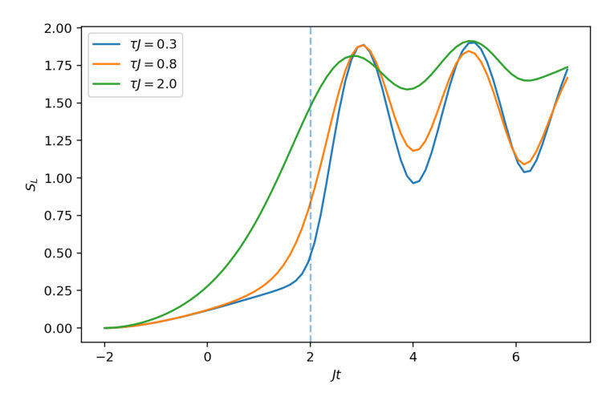
<figcaption class="paper-figure-caption"><b>Fig 4.</b> Figure 4: Entropy histories obtained from the same exact finite-N procedure for three switching times, τJ = 0.3, 0.8, and 2.0. Only the time scale of the shutter protocol is changed. The curves demonstrate protocol dependence in the finite interacting system and are not intended as a universal entropy-growth law.</figcaption>
</figure>
<figure class="paper-figure-card">
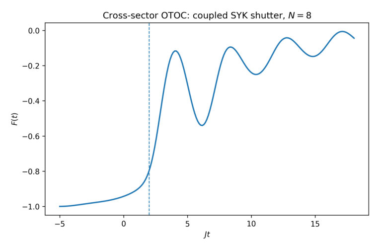
<figcaption class="paper-figure-caption"><b>Fig 5.</b> Figure 5: Exact infinite-temperature cross-sector OTOC for N = 8 Majoranas per SYK copy. The curve is obtained by explicit Heisenberg evolution of V = χL 1 followed by the trace in Eq. (55). The post-opening deviation demonstrates cross-sector operator sensitivity, while the later revival is a finite-size recurrence rather than evidence for a universal Lyapunov exponent.</figcaption>
</figure>
</div>

<p><strong>Summary.</strong> This paper analyzes a Majorana junction built from two coupled, strongly interacting SYK systems undergoing a dynamic coupling change. By analyzing the system's low-frequency response, the authors demonstrate that the strong interactions cause the junction to retain a measurable 'infrared memory' beyond what is predicted by simpler, quadratic models. This connects many-body scrambling diagnostics to fundamental low-energy physics.</p>
<p><strong>Why it may be interesting.</strong> The findings provide a concrete, interacting realization of how quantum information (memory) can be stored or transferred across a junction, extending beyond simple quadratic models and touching upon holographic concepts.</p>
<details>
<summary>Detailed structure</summary>
<p><strong>Main problem.</strong> The study investigates how information transfer and operator structure are affected when a quantum junction connecting two strongly interacting SYK systems is dynamically opened.</p>
<p><strong>Main result.</strong> The interacting system retains a strong infrared memory, evidenced by the effective anomalous response acquiring a power-law infrared sensitivity ($\propto 1/\mu$), which is qualitatively different from the quadratic (free) case.</p>
<p><strong>Method.</strong> The analysis combines low-frequency Keldysh theory applied to the large-N SYK saddle with exact finite-dimensional simulations of the coupled system.</p>
<p><strong>Model / system.</strong> The model is a Majorana junction formed by two coupled Sachdev–Ye–Kitaev (SYK) systems, whose coupling strength $g(t)$ is varied smoothly over time, acting as a 'shutter'.</p>
<p><strong>Key observables.</strong> Infrared memory retention, inter-sector entanglement, parity transfer, and cross-sector operator scrambling (measured via OTOC).</p>
<p><strong>Important parameters / regimes.</strong> The coupling strength $g(t)$ switches between weak and strong regimes; the analysis focuses on the infrared cutoff $\mu 	o 0$.</p>
<p><strong>Assumptions / limitations.</strong> The large-N Keldysh theory is used to linearize the response around the conformal saddle; the continuum limit ($\mu 	o 0$) is an idealization.</p>
<p><strong>Figures summary.</strong> Figures illustrate the smooth shutter protocol, entropy histories showing protocol dependence, and cross-sector OTOC evolution over time.</p>
<p><strong>Paper structure.</strong> The paper progresses from defining the coupled SYK junction and the dynamic coupling protocol, to analyzing the low-frequency response via Keldysh theory, contrasting the free vs. interacting results, and finally confirming the memory effect using finite-N diagnostics.</p>
</details>
<details>
<summary>Abstract</summary>
<p>We study a dynamically opened Majorana junction formed by two coupled Sachdev--Ye--Kitaev (SYK) systems. A time-dependent bilinear coupling drives the system from a nearly decoupled to a strongly hybridized regime, providing an interacting realization of a Majorana shutter. Using a low-frequency analysis of the large-$N$ Keldysh theory around the conformal $q=4$ SYK saddle, we find that the opening retains a strong infrared memory, with the associated anomalous response becoming increasingly sensitive to the infrared cutoff. Exact finite-dimensional simulations of two $N=8$ SYK clusters show enhanced inter-sector entanglement, parity transfer, and cross-sector operator scrambling after the opening. These results connect the infrared structure of conformal SYK dynamics with finite-size many-body scrambling and show how a dynamically opened interacting Majorana system can retain long-wavelength memory beyond the quadratic limit.</p>
</details>
<p><sub><a href="#top">↑ back to top</a></sub></p>

<p><a id="paper-2609.05183"></a></p>
<h3 id="markov-chains-at-the-onset-of-non-reversibility"><a href="http://arxiv.org/abs/2609.05183v1">Markov chains at the onset of non-reversibility</a></h3>
<p><strong>Authors:</strong> Gustave Robichon, Cecile Monthus, Werner Krauth<br>
<strong>Type:</strong> theory · <strong>Category:</strong> statistical mechanics · <strong>PDF:</strong> <a href="https://arxiv.org/pdf/2609.05183v1">https://arxiv.org/pdf/2609.05183v1</a><br>
<strong>Analysis basis:</strong> full PDF text, analyzed in chunks
<strong>Topic relevance:</strong> <code>non-equilibrium universality</code> <strong>3/5</strong> · <code>correlated / nonlocal dissipation</code> <strong>1/5</strong> · <code>driven-dissipative phase transition</code> <strong>1/5</strong> · <code>methods for driven-dissipative</code> <strong>1/5</strong> · <code>scars &amp; prethermalization</code> <strong>1/5</strong></p>
<div class="figure-strip-hint">↔ Scroll figures horizontally</div>
<div class="paper-figures-scroll">
<figure class="paper-figure-card">
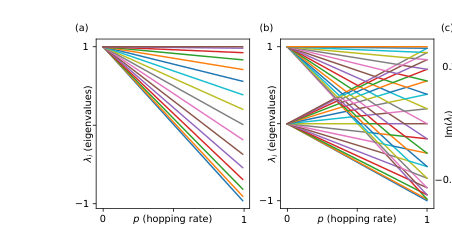
<figcaption class="paper-figure-caption"><b>Fig 1.</b> Fig. 1 Transition-matrix spectra for the flat steady state (N = 16). (a): Path graph of eq. (1) (reversible Markov chain). (b): Lifted path graph of eq. (6) (reversible Markov chain). (c): Lifted path graph of eq. (10) with p = 0.9 as a function of the non-reversibility δ (see also Fig. 2). The complex spectrum arises through the hybridization of the two fans in (b).</figcaption>
</figure>
<figure class="paper-figure-card">
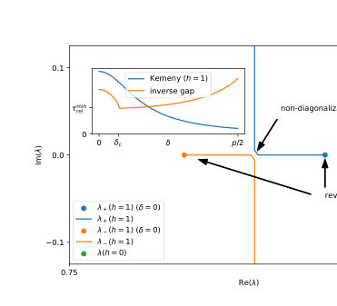
<figcaption class="paper-figure-caption"><b>Fig 2.</b> Fig. 2 Eigenvalues λ±(h = 1) as a function of the non-reversibility δ (flat steady state, N = 8, with ε = 0.05 and p = 0.9), as they approach each other on the real axis, then separate vertically along the imaginary direction. The eigenvalue λ+(h = 0) and its associated left eigenvector are independent of δ. Inset: The inverse of the gap (the minimum distance to the unit circle, see eq. (4)), thus the relaxation time τrel, is minimal when the two eigenvalues meet at δc and the transition matrix is non-diagonalizable. The Kemeny time τ∗(h = 1) = 1/[1−λ+(h = 1)]+1/[1−λ−(h = 1)] will be introduced in Sec. 2.2.</figcaption>
</figure>
<figure class="paper-figure-card">
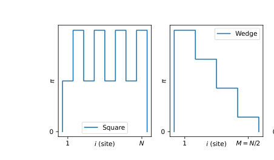
<figcaption class="paper-figure-caption"><b>Fig 3.</b> Fig. 3 Steady states treated in Sec. 4 for N = 8. (a): Square-wave steady state (see eq. (79)). On the path graph, the relaxation time is generically τrel ∼N2 while, on the lifted path graph we reach τrel ∼N. (b): Wedge steady state (see eq. (110)). On the path graph, generically, we have τrel ∼M2, and τrel ∼M on the lifted path graph. The mean first-passage time to reach site M starting from site 1 scales as ∼M2 logM on the path graph and as ∼M2 on the lifted path graph. (c): V-shape steady state (see eq. (111)). On the path graph, generically, τrel ∼N2 logN while on the lifted path graph, we have τrel ∼N2. These times have an evident interpretation in terms of the mean first-passage time,...</figcaption>
</figure>
<figure class="paper-figure-card">
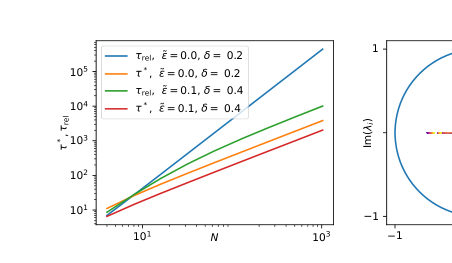
<figcaption class="paper-figure-caption"><b>Fig 4.</b> Fig. 4 Lifted path graph with square-wave steady state (from matrix diagonalizations). (a): Relaxation time τrel (inverse gap) and Kemeny time τ∗as a function of N for p = 0.8 for different non-reversibilities δ and resampling rates ε = ˜ε/N. The Kemeny times for δ = p/2 agree with eq. (108). For ε = 0, we have τrel ∼N2, yet τ∗∼N. (b): Spectrum of the transition matrix for N = 16, p = 0.8 as a function of the non-reversibility δ.</figcaption>
</figure>
<figure class="paper-figure-card">
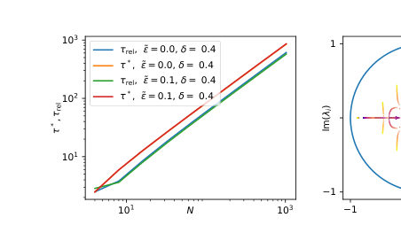
<figcaption class="paper-figure-caption"><b>Fig 5.</b> Fig. 5 Lifted path graph with wedge steady state (from matrix diagonalizations, p = 0.8). (a): Relaxation time τrel (inverse gap) and Kemeny time τ∗as a function of M for p = 0.8 for different non-reversibilities δ and resampling rates ε = ˜ε/M. The Kemeny times τ∗∼N for δ = p/2 and ε = 0 agree with eq. (135). (b): Spectrum of the transition matrix for M = 8, p = 0.8, as a function of the non-reversibility δ.</figcaption>
</figure>
</div>

<p><strong>Summary.</strong> This work analyzes how perturbing a reversible Markov chain on a path graph drives it into non-reversibility. Using spectral analysis and the Green's matrix formalism, the authors compute characteristic times like the mean first-passage time. The key finding is that non-reversibility can fundamentally change the relaxation dynamics, offering insights into non-equilibrium statistical physics.</p>
<p><strong>Why it may be interesting.</strong> The study of non-equilibrium dynamics and the spectral properties of Markov chains is central to understanding relaxation in open quantum systems, providing tools to quantify how deviations from detailed balance affect mixing times.</p>
<details>
<summary>Detailed structure</summary>
<p><strong>Main problem.</strong> The paper investigates the transition of a Markov chain from a reversible to a non-reversible dynamic by perturbing the system.</p>
<p><strong>Main result.</strong> The introduction of non-reversibility can significantly alter the spectral gap and relaxation time, potentially leading to a faster relaxation scaling ($\sim N$ instead of $\sim N^2$) when eigenvalues hybridize.</p>
<p><strong>Method.</strong> The analysis employs the Green's matrix formalism and spectral analysis of the transition matrix, comparing the spectrum of the reversible and perturbed non-reversible chains.</p>
<p><strong>Model / system.</strong> The model is a Markov chain defined on a one-dimensional path graph and its 'lifted' version, which is constructed by duplicating sites to model the transition dynamics.</p>
<p><strong>Key observables.</strong> Spectral gap ($\gamma^*$), Kemeny times, mean first-passage times ($  au_{mj}$), and the eigenvalues of the transition matrix.</p>
<p><strong>Important parameters / regimes.</strong> The non-reversibility parameter ($\delta$), the system size ($N$), and the specific steady state (e.g., flat, square-wave).</p>
<p><strong>Assumptions / limitations.</strong> The analysis assumes the existence of a flat steady state and relies on the Green's matrix approach, which is noted to be valid except for very small non-reversibility parameters.</p>
<p><strong>Figures summary.</strong> Figures illustrate the spectrum of the reversible chain, the complex spectrum as a function of non-reversibility $\delta$, and plots showing the minimal relaxation time occurring when eigenvalues meet.</p>
<p><strong>Paper structure.</strong> The paper first establishes the reversible case on the path graph, then introduces non-reversibility via a parameter $\delta$ on the lifted graph. It develops the Green's matrix formalism to calculate characteristic times and concludes with explicit formulas for mean first-passage times.</p>
</details>
<details>
<summary>Abstract</summary>
<p>For a one-dimensional path graph and a lifted path graph constructed from a duplication of each of its sites, we study how a reversible Markov chain can be perturbed and gradually driven into non-reversibility. The reversible Markov chain has a transition matrix that is diagonalizable and features real-valued eigenvalues and eigenvectors. The left and right eigenvectors form a biorthogonal system. We discuss in concrete examples how the transition matrix of a non-reversible Markov chain may be diagonalizable or non-diagonalizable, and it may have real eigenvalues and complex-conjugate pairs. For a number of steady states (flat, square-wave, wedge, V-shape), we compute eigenvalue spectra on both graphs and discuss the speedup that can be achieved through lifting. We develop a Green's matrix formalism, which we use to compute Kemeny times and mean first-passage times, and which provides valuable information and allows us to interpret the results for the characteristic times.</p>
</details>
<p><sub><a href="#top">↑ back to top</a></sub></p>

<p><a id="paper-2609.04907"></a></p>
<h3 id="microkelvin-resolution-thermometry-at-the-nanometre-scale"><a href="http://arxiv.org/abs/2609.04907v1">Microkelvin resolution thermometry at the nanometre scale</a></h3>
<p><strong>Authors:</strong> Jack W. Hart, Soham Pal, Julien R. E. Roth, Katie Ninham, Abbie H. Aleksandrova, Xander Peetroons, Soumen Mandal, Oliver A. Williams, Gavin W. Morley, Mete Atature, Helena S. Knowles<br>
<strong>Type:</strong> experiment · <strong>Category:</strong> other · <strong>PDF:</strong> <a href="https://arxiv.org/pdf/2609.04907v1">https://arxiv.org/pdf/2609.04907v1</a><br>
<strong>Analysis basis:</strong> full PDF text, analyzed in chunks
<strong>Topic relevance:</strong> <code>QC/QI experiment</code> <strong>3/5</strong> · <code>quantum measurements</code> <strong>3/5</strong> · <code>quantum optics experiment</code> <strong>1/5</strong></p>
<div class="figure-strip-hint">↔ Scroll figures horizontally</div>
<div class="paper-figures-scroll">
<figure class="paper-figure-card">
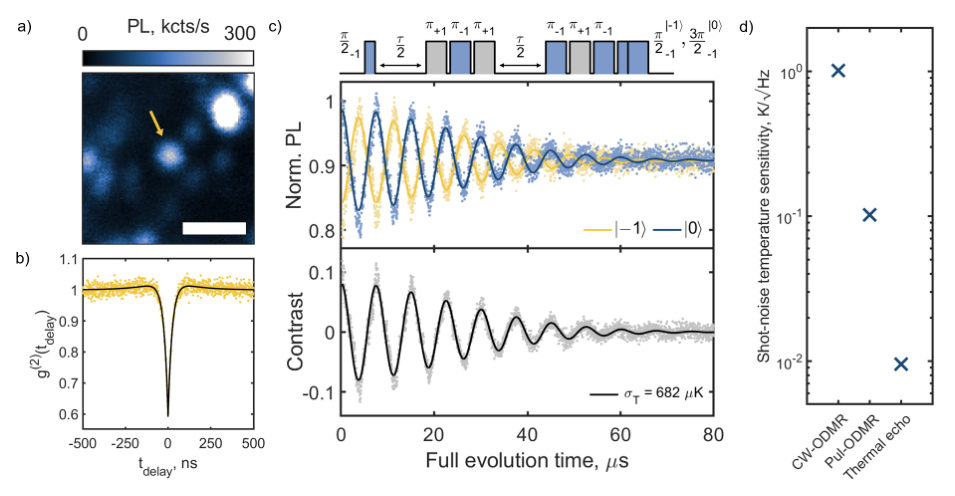
<figcaption class="paper-figure-caption"><b>Fig 1.</b> Figure 1 Exemplary dual-NV nanodiamond temperature measurements using thermal echo protocol. a) Confocal scan of exemplary nanodiamond fluorescence (highlighted with arrow), scalebar = 2 µm. b) Normalized correlation between photon detection events as a function of time delay, g(2)(tdelay), yielding from fit g(2)(tdelay=0) = 0.592 ± 0.004 indicating two NV centers within the nanodiamond. c) (Top) Thermal echo microwave pulse sequence over a full evolution time, τ, where subscripts correspond to the transition being driven (‘-1’ for |0⟩→|−1⟩and ‘+1’ for |0⟩→|+1⟩). The superscripts on the final pulse represent the state projection for readout. (Bottom) Thermal echo photoluminescence (PL)...</figcaption>
</figure>
<figure class="paper-figure-card">
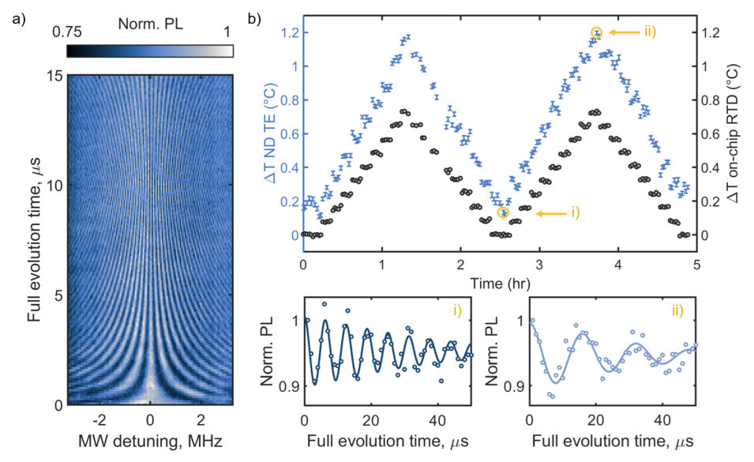
<figcaption class="paper-figure-caption"><b>Fig 2.</b> Figure 2 High fidelity temperature sensing using a dual-NV nanodiamond. a) Thermal echo chevron for simulated tempera- ture changes by deliberate microwave (MW) detuning in increments of 50 kHz in a ±3.2 MHz range. b) Temperature ramping using on-chip heating element. Relative changes in the nanodiamond temperature extracted using the thermal echo (blue) closely match the temperature reported by the on-chip resistance temperature detector (RTD, grey circles). Example thermal echo signals at the top (hottest) and bottom (coldest) parts of the heating ramp are show in the subsets i) and ii).</figcaption>
</figure>
<figure class="paper-figure-card">
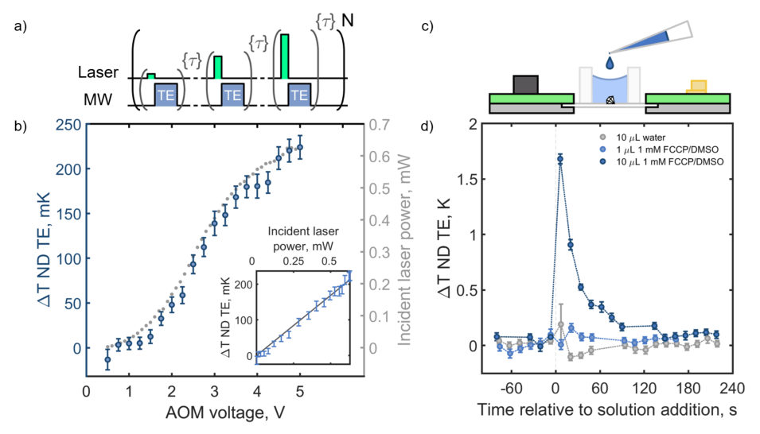
<figcaption class="paper-figure-caption"><b>Fig 3.</b> Figure 3 Laser-induced heating and single-shot exothermic chemical temperature sensing experiments. a) Pulse sequence for the laser-induced heating experiment, where the laser power is increased for each set of full evolution times, τ, for N repeats. b) Temperature increase of the nanodiamond as a function of AOM voltage, which corresponds directly to incident laser power. Inset: Linear relationship between incident laser power and temperature at the nanodiamond. c) Schematic of the solution addition experiment. The nanodiamond is submerged in 200 µL of deionized water in an on-chip well. Solutions are added in such a way as so no contact between the pipette tip and bulk solution is made...</figcaption>
</figure>
</div>

<p><strong>Summary.</strong> This paper reports a significant advancement in nanoscale thermometry by utilizing isotopically-purified dual-NV nanodiamonds. By employing a specialized Thermal Echo protocol, the researchers achieved sub-millikelvin temperature sensitivity, representing an order of magnitude improvement over previous methods. This capability opens new avenues for monitoring minute thermal fluctuations in biological and chemical processes at the nanoscale.</p>
<p><strong>Why it may be interesting.</strong> This work represents a significant experimental advance in quantum sensing, pushing the limits of thermal measurement resolution using solid-state quantum emitters, which is highly relevant to open quantum systems and quantum optics.</p>
<details>
<summary>Detailed structure</summary>
<p><strong>Main problem.</strong> The primary challenge addressed is achieving accurate temperature readings of transient events at the nanometer scale due to the low sensitivity of existing sensors.</p>
<p><strong>Main result.</strong> The authors achieved an order of magnitude improvement in temperature measurement sensitivity using isotopically-purified dual-NV nanodiamonds, reaching a shot-noise limited sensitivity of 9.6 mK/sqrt(Hz).</p>
<p><strong>Method.</strong> The technique utilizes Nitrogen-Vacancy (NV) centers in nanodiamonds, employing the Thermal Echo (TE) protocol to measure temperature-dependent changes in the NV spin state.</p>
<p><strong>Model / system.</strong> The physical platform is nanodiamonds containing nitrogen-vacancy (NV) centers, specifically using isotopically-purified dual-NV structures on a bespoke quantum sensing chip.</p>
<p><strong>Key observables.</strong> Temperature sensing resolution floor, experimental temperature sensitivities (e.g., 48.2 mK/sqrt(Hz)), and shot-noise limited sensitivity (9.6 mK/sqrt(Hz)).</p>
<p><strong>Important parameters / regimes.</strong> Sub-millikelvin resolution, nanometer-scale localization, and the temperature-dependent zero-field splitting D(T) of the NV ground spin states.</p>
<p><strong>Assumptions / limitations.</strong> The measurement is susceptible to minor changes in background fluorescence, and the methodology using external magnetic particles may not translate directly to all cellular environments.</p>
<p><strong>Figures summary.</strong> Figures show exemplary dual-NV measurements using the TE protocol, comparing sensitivities between CW-ODMR and TE, and demonstrating the quantification of temperature changes from laser excitation and exothermic chemical mixing.</p>
<p><strong>Paper structure.</strong> The paper details the use of the TE protocol for high-sensitivity thermometry, calibrates the system against an on-chip RTD, and then applies the technique to measure thermal loads from external sources like lasers and chemical reactions.</p>
</details>
<details>
<summary>Abstract</summary>
<p>Accurate temperature readings of transient events at the nanometer scale are challenging due to the low sensitivity of available sensors. Nanodiamonds containing nitrogen-vacancy (NV) centers have been used for nanoscale thermometry in complex environments, including inside living cells. However, their performance has been limited by short coherence times and low photon counts. In this work, we use isotopically-purified dual-NV nanodiamonds and a bespoke quantum sensing chip to showcase an order of magnitude improvement in temperature measurement sensitivity compared with previous reports. We demonstrate robust temperature measurements with an error of 682 $μ$K, experimental sensitivities below 50 mK/$\surd \text{Hz}$ and a shot-noise limited sensitivity of 9.6 mK/$\surd \text{Hz}$. To confirm the utility of these high-performance nanothermometers, we quantify the temperature change induced by the thermometry measurement itself, specifically the optical excitation laser used to probe the NV spin state. In addition, we observe directly at the nanometre scale the transient heating caused by the exothermic mixing of dimethyl sulfoxide in water. Sub-millikelvin resolution and millikelvin sensitivity thermometry unlock the possibility of monitoring minute thermal fluctuations in living systems and assessing catalyst performance at the nanometre scale.</p>
</details>
<p><sub><a href="#top">↑ back to top</a></sub></p>

<p><a id="paper-2609.04896"></a></p>
<h3 id="neural-networks-learn-to-reconstruct-multipartite-entanglement-from-quantum-marginals"><a href="http://arxiv.org/abs/2609.04896v1">Neural networks learn to reconstruct multipartite entanglement from quantum marginals</a></h3>
<p><strong>Authors:</strong> Matreyee Kandpal, Arvind, Kavita Dorai<br>
<strong>Type:</strong> both · <strong>Category:</strong> quantum information and computing · <strong>PDF:</strong> <a href="https://arxiv.org/pdf/2609.04896v1">https://arxiv.org/pdf/2609.04896v1</a><br>
<strong>Analysis basis:</strong> full PDF text, analyzed in chunks
<strong>Topic relevance:</strong> <code>QC/QI experiment</code> <strong>3/5</strong> · <code>methods for driven-dissipative</code> <strong>2/5</strong> · <code>quantum measurements</code> <strong>2/5</strong></p>
<div class="figure-strip-hint">↔ Scroll figures horizontally</div>
<div class="paper-figures-scroll">
<figure class="paper-figure-card">
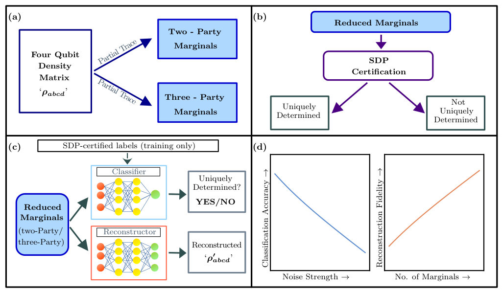
<figcaption class="paper-figure-caption"><b>Fig 1.</b> FIG. 1. ANN framework for the four-qubit quantum marginal problem. (a) Global four-qubit states are accessed only through their two-body and three-body reduced density matrices. (b) Reconstructability analysis using semidefinite programming (SDP), which determines whether a given set of marginals uniquely specifies a compatible global state. (c) Neural-network framework comprising two tasks: classification of reconstructability directly from marginals, and constructive reconstruction of four-qubit density matrices when uniqueness holds. (d) ANN performance analysis using classification accuracy and state- reconstruction fidelity as functions of noise strength and available marginal...</figcaption>
</figure>
<figure class="paper-figure-card">
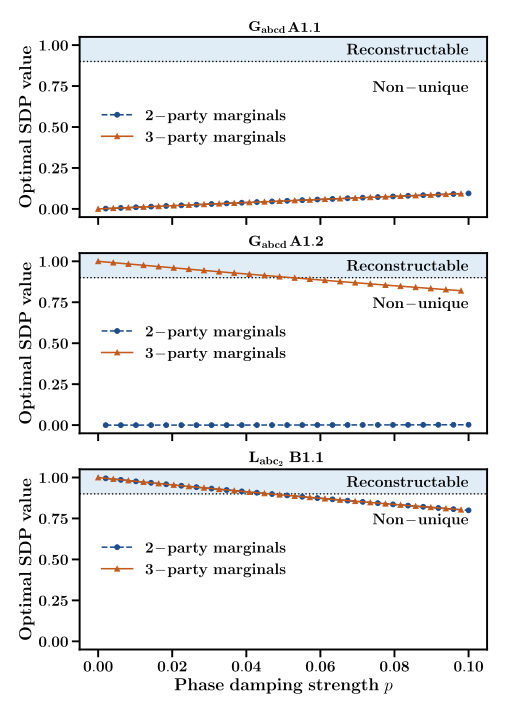
<figcaption class="paper-figure-caption"><b>Fig 2.</b> FIG. 2. SDP results for reconstructability of four-qubit states from reduced marginals. The effect of phase-damping noise on reconstructability is shown for three representative classes of four qubits, quantified by the optimal SDP value as a function of the noise strength p.</figcaption>
</figure>
<figure class="paper-figure-card">
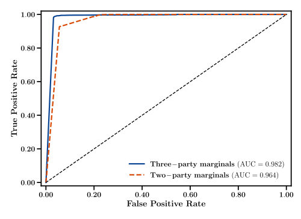
<figcaption class="paper-figure-caption"><b>Fig 3.</b> FIG. 3. Receiver operating characteristic (ROC) curves for classifiers based on three-party marginals (blue solid curve) and two-party marginals (orange dashed curve), evaluated at fixed phase damping noise strength p = 0.03. The curves show the true positive rate as a function of the false positive rate, with the diagonal dashed line indicating random guess- ing. The area under the curve (AUC) is 0.982 for three-party marginals and 0.964 for two-party marginals.</figcaption>
</figure>
<figure class="paper-figure-card">
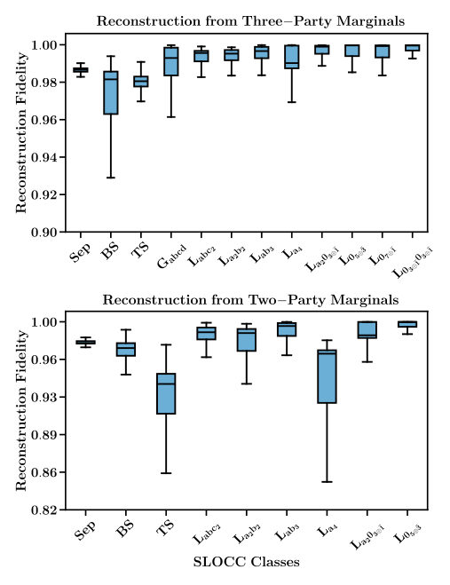
<figcaption class="paper-figure-caption"><b>Fig 4.</b> FIG. 4. Neural reconstruction of four-qubit states from re- duced density matrices. Upper panels show reconstruction using all three-party marginals, while lower panels show re- construction using all two-party marginals. The plots display class-resolved fidelity distributions across SLOCC families for SDP-certified reconstructible states, with each box plot com- piled from 104 samples per class including both pure and noisy states. All reconstructions used reduced density ma- trices alone, without access to the global four-qubit state.</figcaption>
</figure>
<figure class="paper-figure-card">
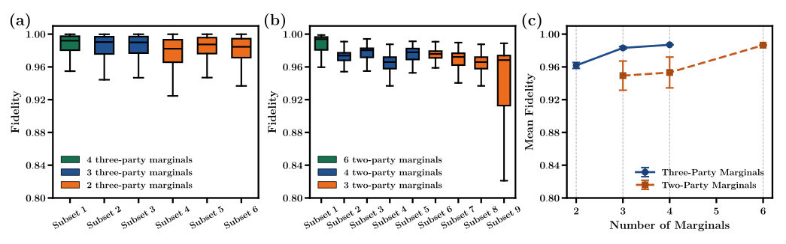
<figcaption class="paper-figure-caption"><b>Fig 5.</b> FIG. 5. Reconstruction fidelity as a function of marginal information. (a) Fidelity distributions for neural reconstruction of four- qubit states from subsets of three-party marginals, grouped by the number of marginals used. Each box plot corresponds to a distinct marginal configuration. (b) Corresponding fidelity distributions for reconstruction from subsets of two-party marginals. (c) Mean reconstruction fidelity versus the number of available marginals, averaged across all marginal configurations within each group. Error bars indicate the standard deviation across configurations. All fidelities are computed on sets of 104 states drawn from all SLOCC classes used in training, including...</figcaption>
</figure>
</div>

<p><strong>Summary.</strong> This work tackles the Quantum Marginal Problem by showing that neural networks can learn when local measurements (marginals) uniquely determine a global quantum state. By training on four-qubit systems, the authors demonstrate that higher-order marginals are key to reconstruction and validate this approach using both simulation and NMR quantum hardware. This offers a practical, data-driven method for quantum state characterization under realistic noise.</p>
<p><strong>Why it may be interesting.</strong> It provides a powerful, data-driven tool to characterize the information content of local measurements, which is critical for designing robust quantum tomography protocols in noisy quantum computing hardware.</p>
<details>
<summary>Detailed structure</summary>
<p><strong>Main problem.</strong> The paper addresses the Quantum Marginal Problem (QMP): determining if a collection of reduced density matrices (marginals) uniquely specifies a global quantum state.</p>
<p><strong>Main result.</strong> Neural networks can accurately classify marginal reconstructability and reconstruct the full quantum state from reduced data, even when the system is subject to realistic experimental noise.</p>
<p><strong>Method.</strong> The authors combine theoretical certification using Semidefinite Programming (SDP) with machine learning by training neural networks to learn the complex mapping from marginals to global state structure.</p>
<p><strong>Model / system.</strong> The study focuses on four-qubit systems, tested both theoretically across 49 inequivalent SLOCC entanglement classes and experimentally on a four-qubit Nuclear Magnetic Resonance (NMR) quantum processor.</p>
<p><strong>Key observables.</strong> Reconstruction fidelity, classification accuracy (AUC), and the ability to distinguish between reconstructible and non-reconstructible entanglement classes.</p>
<p><strong>Important parameters / regimes.</strong> The order and type of marginals (two-party vs. three-party) are crucial, as is the noise strength (e.g., phase damping parameter $p$).</p>
<p><strong>Assumptions / limitations.</strong> The ML approach assumes that the underlying structure of quantum information is encoded compactly in low-order marginals, and the reconstruction process requires projecting the raw network output onto the space of physical density matrices.</p>
<p><strong>Figures summary.</strong> Figures illustrate the ANN framework, showing classification results (ROC curves) and reconstruction fidelity comparisons using different sets of marginals under varying noise levels.</p>
<p><strong>Paper structure.</strong> The paper establishes the QMP, uses SDP to map the theoretical landscape, and then develops and tests an ANN framework to learn this mapping directly from reduced data, validating the approach on both simulated and experimental NMR data.</p>
</details>
<details>
<summary>Abstract</summary>
<p>Different sets of local correlations are not equivalent: some fragments of reduced data uniquely determine a global quantum state, while others leave it ambiguous. The quantum marginal problem asks whether a collection of reduced density matrices uniquely determines a compatible global quantum state. Although generic quantum states are uniquely specified by suitable sets of marginals, different collections of marginals are not equally informative: some uniquely determine the global state, whereas others leave it ambiguous. Identifying when uniqueness holds, and reconstructing the global state from partial information, remains computationally demanding and experimentally challenging.   We show that information about the multipartite entanglement class and reconstructability in four-qubit systems is compactly encoded in small sets of two- and three-qubit marginals. Using semidefinite programming, we chart the reconstructability landscape across 49 inequivalent SLOCC entanglement classes and show that uniqueness strongly depends on both entanglement structure and marginal order. Neural networks trained only on reduced density matrices learn this structure directly. They accurately classify marginal reconstructability and, when uniqueness holds, reconstruct the full four-qubit density matrix with high fidelity from two- and three-qubit marginals.   We benchmark the approach on a four-qubit nuclear magnetic resonance quantum processor and demonstrate that reconstructions from experimentally measured marginals remain faithful despite phase damping and control imperfections. Our results show that neural networks can learn when local correlations uniquely specify a global quantum state, and reveal how global quantum structure is encoded in reduced data.</p>
</details>
<p><sub><a href="#top">↑ back to top</a></sub></p>

<p><a id="paper-2609.04733"></a></p>
<h3 id="nitrogen-vacancy-centers-in-diamond-for-quantum-biosensing-magnetometry-techniques-platforms-and-applications"><a href="http://arxiv.org/abs/2609.04733v1">Nitrogen Vacancy Centers in Diamond for Quantum Biosensing: Magnetometry Techniques, Platforms and Applications</a></h3>
<p><strong>Authors:</strong> Sirsendu Ghosal, Umakant Prajapati, Sachin Negi, Saifian Farooq Bhat, Thejas B, Vibhav Bharadwaj<br>
<strong>Type:</strong> theory · <strong>Category:</strong> other · <strong>PDF:</strong> <a href="https://arxiv.org/pdf/2609.04733v1">https://arxiv.org/pdf/2609.04733v1</a><br>
<strong>Analysis basis:</strong> full PDF text, analyzed in chunks
<strong>Topic relevance:</strong> <code>QC/QI experiment</code> <strong>3/5</strong> · <code>quantum measurements</code> <strong>2/5</strong> · <code>analog quantum simulation</code> <strong>1/5</strong> · <code>quantum optics experiment</code> <strong>1/5</strong></p>
<div class="figure-strip-hint">↔ Scroll figures horizontally</div>
<div class="paper-figures-scroll">
<figure class="paper-figure-card">
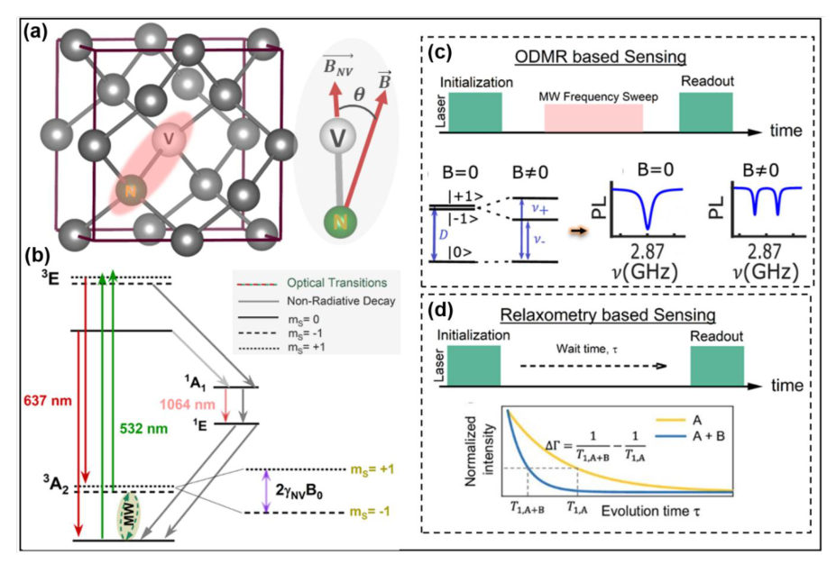
<figcaption class="paper-figure-caption"><b>Fig 1.</b> Fig. 1. (a) Atomic structure of an NV center in diamond, consisting of a substitutional nitrogen atom</figcaption>
</figure>
<figure class="paper-figure-card">
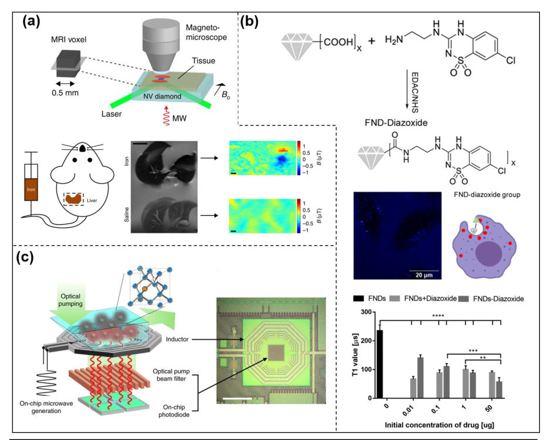
<figcaption class="paper-figure-caption"><b>Fig 2.</b> Fig. 2. Diamond platforms for biosensing and quantum bioimaging. (a) Single-crystal bulk diamond</figcaption>
</figure>
<figure class="paper-figure-card">
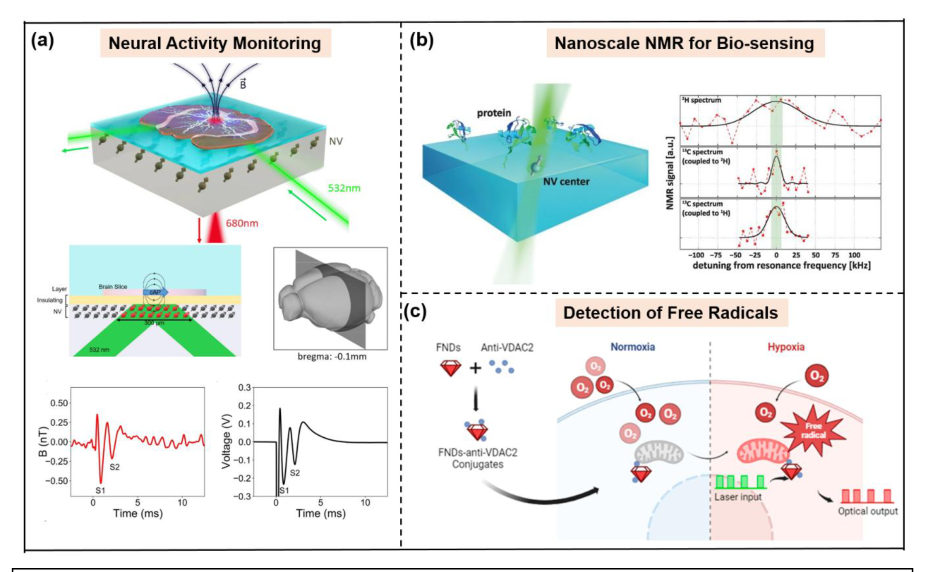
<figcaption class="paper-figure-caption"><b>Fig 3.</b> Fig. 3. Emerging applications of NV-center-based quantum biosensing. (a) Neuronal activity</figcaption>
</figure>
<figure class="paper-figure-card">

<figcaption class="paper-figure-caption"><b>Fig 4.</b> Fig. 4. Emerging applications of NV-center-based quantum biosensing (a) Drug Delivery:</figcaption>
</figure>
<figure class="paper-figure-card">

<figcaption class="paper-figure-caption"><b>Fig 5.</b> Fig. 5. Current challenges and prospective engineering solutions in NV-diamond biosensing.</figcaption>
</figure>
</div>

<p><strong>Summary.</strong> This review surveys the use of Nitrogen-Vacancy (NV) centers in diamond for quantum magnetometry in biological settings. It details the underlying spin physics and compares two key measurement techniques: ODMR for static fields and spin relaxometry for dynamic noise. The paper highlights the platform's potential for advanced, miniaturized, and biocompatible biomedical sensing.</p>
<p><strong>Why it may be interesting.</strong> This work bridges quantum optics and condensed matter physics by applying solid-state quantum systems (NV centers) to complex, noisy, and biologically relevant environments, touching upon open quantum systems dynamics.</p>
<details>
<summary>Detailed structure</summary>
<p><strong>Main problem.</strong> The central problem is developing quantum sensing technologies to detect ultra-low magnetic fields generated by biological processes in ambient, aqueous conditions.</p>
<p><strong>Main result.</strong> The review establishes NV centers in diamond as a powerful, biocompatible platform for quantum magnetometry, detailing its application in biosensing and bio-imaging.</p>
<p><strong>Method.</strong> The paper reviews two primary detection modalities: Optically Detected Magnetic Resonance (ODMR) for static fields and Spin Relaxometry for dynamic magnetic noise.</p>
<p><strong>Model / system.</strong> The physical system is the Nitrogen-Vacancy (NV) center in diamond, whose spin physics is governed by a Hamiltonian involving zero-field splitting ($D\hat{S}_z^2$) and external magnetic field coupling ($\gamma_e \mathbf{B} \cdot \hat{\mathbf{S}}$).</p>
<p><strong>Key observables.</strong> Resonance frequency shifts ($\Delta f$) via ODMR, and the longitudinal spin relaxation time ($T_1$) via spin relaxometry.</p>
<p><strong>Important parameters / regimes.</strong> Spin coherence times, magnetic field strength ($B$), temperature, and the spatial scale (nanoscale to cellular level).</p>
<p><strong>Assumptions / limitations.</strong> The primary limitations discussed include surface-induced decoherence and signal-to-noise limitations in biofluids.</p>
<p><strong>Figures summary.</strong> Figures illustrate the NV structure, energy levels, the ODMR principle (using green laser and MW field), and the spin relaxometry measurement scheme.</p>
<p><strong>Paper structure.</strong> The review proceeds by detailing the fundamental spin physics of NV centers, explaining the two core measurement techniques (ODMR and T1 relaxometry), exploring key application areas (NMR, neural monitoring), discussing enhancement strategies (functionalization, microfluidics), and concluding with open challenges and future prospects.</p>
</details>
<details>
<summary>Abstract</summary>
<p>Quantum sensing using nitrogen-vacancy (NV) centers in diamond has emerged as a powerful platform for detecting ultra-low magnetic fields under ambient conditions. Owing to their long spin coherence times, optical addressability, and compatibility with aqueous environments, it has found widespread applications in biosensing and bio-imaging. This review presents the fundamental principles and recent advances in NV-based quantum magnetometry for biosensing applications, with a particular focus on measurements in aqueous medium and at cellular and molecular length scales. We discuss the underlying spin physics of NV centers and highlight two primary detection modalities: optically detected magnetic resonance (ODMR) and T1 relaxometry-based sensing and how these approaches aids in the detection of both static magnetic fields and dynamic magnetic noise arising from biological processes. The review explores key application areas, including nanoscale nuclear magnetic resonance (NMR), monitoring of neural activity, detection of abnormal or rogue cells using NV-based platforms etc. In addition, strategies for enhancing sensitivity, such as surface functionalization of nanodiamonds, femtosecond (fs) laser-written photonic structures, and integration with microfluidic and lab-on-chip systems have also been discussed in depth. We also address the critical challenges, including surface-induced decoherence, charge-state instability, and signal-to-noise limitations in biofluids associated with NV-based biosensing applications. Finally, we outline future prospects, highlighting how NV-based magnetic biosensing provides a promising pathway for translating quantum sensing technologies into practical biomedical applications.</p>
</details>
<p><sub><a href="#top">↑ back to top</a></sub></p>

<p><a id="paper-2609.04666"></a></p>
<h3 id="research-and-simulation-of-analytical-polarization-control-enabled-by-optical-computing-on-an-integrated-photonics-chip"><a href="http://arxiv.org/abs/2609.04666v1">Research and simulation of analytical polarization control enabled by optical computing on an integrated photonics chip</a></h3>
<p><strong>Authors:</strong> Xueying Ren, Junxin Yan, Xuyang Wang, Bailin Shen, Lingyan Zhang, Minyue Yang, Nannan Ning, Jiaxin Huang, Zhenguo Lu, Jun Zou, Yongmin Li<br>
<strong>Type:</strong> theory · <strong>Category:</strong> other · <strong>PDF:</strong> <a href="https://arxiv.org/pdf/2609.04666v1">https://arxiv.org/pdf/2609.04666v1</a><br>
<strong>Analysis basis:</strong> full PDF text, analyzed in chunks
<strong>Topic relevance:</strong> <code>interference shaping light</code> <strong>3/5</strong> · <code>QC/QI experiment</code> <strong>1/5</strong> · <code>analog quantum simulation</code> <strong>1/5</strong> · <code>quantum measurements</code> <strong>1/5</strong> · <code>quantum optics experiment</code> <strong>1/5</strong></p>
<div class="figure-strip-hint">↔ Scroll figures horizontally</div>
<div class="paper-figures-scroll">
<figure class="paper-figure-card">

<figcaption class="paper-figure-caption"><b>Fig 1.</b> Fig. 1. Two types of Poincaré spheres. (a) The Poincaré sphere with phases δ and 2α; (b) The Poincaré sphere with phases 2θ and 2β.</figcaption>
</figure>
<figure class="paper-figure-card">

<figcaption class="paper-figure-caption"><b>Fig 2.</b> Fig. 4. Structure (a) and relationship of various functional units (b) in APC.</figcaption>
</figure>
<figure class="paper-figure-card">

<figcaption class="paper-figure-caption"><b>Fig 3.</b> Fig. 5. Various structures for calibration. (a) Basic struc- ture of the pairwise scanning method; (b) Equivalent cas- caded MZI structures; (c) Equivalent cascaded MZI struc- tures when θ4 + ∆θ4 = π/2; (d) Equivalent cascaded MZI strugtures when θ4 + ∆θ4 = π.</figcaption>
</figure>
<figure class="paper-figure-card">

<figcaption class="paper-figure-caption"><b>Fig 4.</b> Fig. 8. Normalized output intensity versus the longitude phase δc at different latitude phases.</figcaption>
</figure>
<figure class="paper-figure-card">

<figcaption class="paper-figure-caption"><b>Fig 5.</b> Fig. 9. Equivalent structure (a), (b) and flowchart (c) for the analytic polarization control.</figcaption>
</figure>
</div>

<p><strong>Summary.</strong> This paper introduces an Analytical Polarization Control (APC) method for integrated photonics chips, replacing inefficient search algorithms. By utilizing four phase shifters and implementing a novel calibration and endless control unit, the system achieves continuous, stable control over the polarization state. This establishes a practical, high-speed architecture for on-chip polarization manipulation.</p>
<p><strong>Why it may be interesting.</strong> This work is highly relevant to quantum optics and open quantum systems as it details the hardware implementation required for robust polarization manipulation, which is critical for quantum communication protocols.</p>
<details>
<summary>Detailed structure</summary>
<p><strong>Main problem.</strong> The paper addresses the need for an efficient, analytical method to control the polarization state of light on an integrated photonics chip, overcoming the limitations of traditional blind-search techniques.</p>
<p><strong>Main result.</strong> An Analytical Polarization Control (APC) architecture using four phase shifters was proposed, enabling continuous polarization control and realizing rotations around all three axes of the Poincaré sphere.</p>
<p><strong>Method.</strong> The authors developed the APC method by modeling polarization transformations using Jones and Mueller matrices, introducing a novel calibration procedure, and implementing an 'endless control unit' to maintain stability.</p>
<p><strong>Model / system.</strong> The physical system is an integrated photonics chip utilizing Mach-Zehnder Interferometers (MZIs) and phase shifters. Polarization states are analyzed using the Poincaré sphere representation and quantified via the Stokes vector.</p>
<p><strong>Key observables.</strong> Output extinction ratio (ER), output intensity stability, and the ability to achieve rotations around the three principal axes ($S_1, S_2, S_3$) of the Poincaré sphere.</p>
<p><strong>Important parameters / regimes.</strong> The number of phase shifters (four are key), the phase differences ($\Delta	heta_4$), and the achievable extinction ratio (e.g., $>40$ dB).</p>
<p><strong>Assumptions / limitations.</strong> The analysis assumes ideal operation regarding propagation loss and coupling ratios, though the final architecture is designed for practical implementation with FPGA acceleration.</p>
<p><strong>Figures summary.</strong> Figures illustrate Poincaré sphere representations, basic chip structures for polarization rotation, and comparative plots showing output intensity stability with and without the proposed 'endless control' mechanism.</p>
<p><strong>Paper structure.</strong> The paper first establishes the need for APC, details the basic structures and mathematical modeling using Jones/Mueller matrices, presents the calibration method for phase shifters, and finally simulates the performance benefits of the endless control unit and the fourth phase shifter.</p>
</details>
<details>
<summary>Abstract</summary>
<p>Dynamic polarization controllers are key devices with broad applications in many fields. However, most on-chip polarization controllers still rely on traditional blind-search methods, whereas analytical optical-computing approaches remain insufficiently explored, particularly with respect to calibration and endless polarization control. With the accurate relative phase of Mach-Zehnder interferometer (MZI) being fully controllable on an integrated photonics chip, we present an analytical polarization control (APC) method using four phase shifters and optical computing, eliminating the need for the traditional inefficient blind-search procedure. The basic structures and operations of APC are clarified. The proposed calibration method and endless control method enable continuous APC while compensating for phase differences within the MZI structures. We simulate the influence of the endless control unit on polarization control and quantify the effect of the fourth phase difference on the output extinction ratio. With the fourth phase shifter, the phase difference encountered during Stokes vector measurement can be effectively compensated, and rotations around all three axes on the Poincaré sphere can be realized. These results establish a practical APC architecture based on optical computing for photonics chips. The proposed APC methods, combined with a FPGA-based hardware acceleration, will enable high speed on-chip polarization controllers.</p>
</details>
<p><sub><a href="#top">↑ back to top</a></sub></p>

<p><a id="paper-2609.05045"></a></p>
<h3 id="tensor-network-inference-in-a-field-coupled-xy-model-for-portfolio-allocation"><a href="http://arxiv.org/abs/2609.05045v1">Tensor-Network Inference in a Field-Coupled XY Model for Portfolio Allocation</a></h3>
<p><strong>Authors:</strong> Kartikeya Chowdhry, G Subrahmanya V. R. K. Rao<br>
<strong>Type:</strong> theory · <strong>Category:</strong> statistical mechanics · <strong>PDF:</strong> <a href="https://arxiv.org/pdf/2609.05045v1">https://arxiv.org/pdf/2609.05045v1</a><br>
<strong>Analysis basis:</strong> full PDF text, analyzed in chunks
<strong>Topic relevance:</strong> <code>methods for driven-dissipative</code> <strong>3/5</strong> · <code>Frenkel-Kontorova</code> <strong>1/5</strong> · <code>Keldysh / 2PI / non-Gaussian methods</code> <strong>1/5</strong> · <code>analog quantum simulation</code> <strong>1/5</strong> · <code>driven-dissipative phase transition</code> <strong>1/5</strong></p>
<div class="figure-strip-hint">↔ Scroll figures horizontally</div>
<div class="paper-figures-scroll">
<figure class="paper-figure-card">

<figcaption class="paper-figure-caption"><b>Fig 1.</b> Figure 2: Two-pass contraction on a rooted tree. The upward pass produces the partition function; the downward pass combines the complementary part of the tree with each node’s child messages to obtain its marginal. The empirical path is the degree-two special case.</figcaption>
</figure>
<figure class="paper-figure-card">

<figcaption class="paper-figure-caption"><b>Fig 2.</b> Figure 3: Sample correlation matrices of daily log returns over 2016–2026. Assets are shown in the fixed input order; every matrix is estimated from its market’s complete-case return panel.</figcaption>
</figure>
<figure class="paper-figure-card">

<figcaption class="paper-figure-caption"><b>Fig 3.</b> Figure 3: Figure 3 continued. Panel conventions follow the first page of the figure.</figcaption>
</figure>
<figure class="paper-figure-card">

<figcaption class="paper-figure-caption"><b>Fig 4.</b> Figure 3: Figure 3 continued. Panel conventions follow the first page of the figure.</figcaption>
</figure>
<figure class="paper-figure-card">

<figcaption class="paper-figure-caption"><b>Fig 5.</b> Figure 4: Distribution of δ(a, b, c, d) over all asset quadruples: 27,405 quadruples for N = 30 and 23,751 for N = 29. Vertical lines mark the sample mean and maximum.</figcaption>
</figure>
</div>

<p><strong>Summary.</strong> This paper reformulates portfolio optimization as an inference problem on a field-coupled XY model, using tensor networks to calculate equilibrium magnetizations from financial correlation data. It demonstrates a computationally tractable method to generate long-only portfolio weights that can be compared against traditional benchmarks using same-sample performance metrics.</p>
<p><strong>Why it may be interesting.</strong> While applied to finance, the methodology heavily relies on advanced techniques from statistical mechanics (XY models, partition functions) and numerical physics (tensor networks), providing a rich example of applying many-body physics tools to complex, non-equilibrium systems.</p>
<details>
<summary>Detailed structure</summary>
<p><strong>Main problem.</strong> The paper applies tensor-network methods to model long-only portfolio construction using a field-coupled XY model derived from financial time series data.</p>
<p><strong>Main result.</strong> The resulting network-adjusted portfolio weights show favorable same-sample Sharpe ratios compared to standard benchmarks like equal-weighting, although the Markowitz tangency portfolio remained the strongest.</p>
<p><strong>Method.</strong> The core method involves mapping the continuous XY partition function to a finite-current tensor network via Fourier-Bessel expansion, followed by bottom-up and top-down tensor contraction.</p>
<p><strong>Model / system.</strong> The system is a field-coupled XY model defined by the Hamiltonian H(theta) = -sum J_ij cos(theta_i - theta_j) - sum h_i cos theta_i. The couplings J_ij and fields h_i are derived directly from empirical asset correlations and return statistics.</p>
<p><strong>Key observables.</strong> One-site marginals (cosine scores, m_i) and the final positive, fully invested portfolio weights (w_i).</p>
<p><strong>Important parameters / regimes.</strong> Inverse temperature beta (β) and concentration gamma (γ), which control the influence of interactions and the softmax allocation, respectively.</p>
<p><strong>Assumptions / limitations.</strong> The primary assumptions include approximating the continuous spin system with a finite-current tensor network cutoff and restricting the graph structure to a path defined by Ward clustering.</p>
<p><strong>Figures summary.</strong> Figures show the workflow from market data to network-adjusted portfolios, and comparative plots place the XY portfolios within the mean-variance space alongside standard benchmarks.</p>
<p><strong>Paper structure.</strong> The paper follows a multi-stage workflow: data processing (returns/covariances) -&gt; graph construction (distance/hyperbolicity/clustering) -&gt; physical modeling (XY Hamiltonian/Tensor Network Inference) -&gt; weight calculation (marginalization/softmax) -&gt; performance comparison against benchmarks.</p>
</details>
<details>
<summary>Abstract</summary>
<p>We apply tensor-network methods to a field-coupled XY model for long-only portfolio construction. Daily return statistics set asset-specific fields and correlation couplings. Correlation distance, four-point Gromov hyperbolicity, and Ward clustering are used to construct a sparse interaction path. A Fourier-Bessel expansion maps the continuous angular partition function to a finite-current tensor network; bottom-up and top-down contractions then give the one-site marginals and equilibrium cosine scores. A softmax map converts these scores into positive, fully invested portfolio weights. We study five equity markets over continuous ranges of inverse temperature beta and concentration gamma, and compare selected parameter pairs with long-only Markowitz frontiers and standard benchmarks. The same-sample comparisons demonstrate a tractable route from financial time series to network-adjusted allocations; predictive trading performance is outside their scope.</p>
</details>
<p><sub><a href="#top">↑ back to top</a></sub></p>

<p><a id="paper-2609.04311"></a></p>
<h3 id="development-of-quantum-technologies-for-opticalinfrared-interferometry"><a href="http://arxiv.org/abs/2609.04311v1">Development of quantum technologies for optical/infrared interferometry</a></h3>
<p><strong>Authors:</strong> John D. Monnier<br>
<strong>Type:</strong> theory · <strong>Category:</strong> other · <strong>PDF:</strong> <a href="https://arxiv.org/pdf/2609.04311v1">https://arxiv.org/pdf/2609.04311v1</a><br>
<strong>Analysis basis:</strong> full PDF text, analyzed in chunks
<strong>Topic relevance:</strong> <code>interference shaping light</code> <strong>3/5</strong> · <code>quantum measurements</code> <strong>3/5</strong></p>
<div class="figure-strip-hint">↔ Scroll figures horizontally</div>
<div class="paper-figures-scroll">
<figure class="paper-figure-card">

<figcaption class="paper-figure-caption"><b>Fig 1.</b> Figure 1. Three phase-sensitive architectures and representative weak-source SNR scalings; the source’s µ corresponds to n in our scalings. Cropped from Fig. 1a of P.-J. Stas et al., arXiv:2509.09464v2 (2025), under the CC BY 4.0 license; see also the published version.9</figcaption>
</figure>
<figure class="paper-figure-card">

<figcaption class="paper-figure-caption"><b>Fig 2.</b> Figure 2. Laboratory implementation of the entangled-reference receiver of Brown et al.. A rotating diffuser produced the weak pseudo-thermal source, while SPDC supplied the heralded path-entangled reference. Cropped from Fig. 2 of M. R. Brown et al., “Interferometric Imaging Using Shared Quantum Entanglement,” Phys. Rev. Lett. 131, 210801 (2023), doi:10.1103/PhysRevLett.131.210801, under the CC BY 4.0 license; cropping is the only modification.</figcaption>
</figure>
<figure class="paper-figure-card">

<figcaption class="paper-figure-caption"><b>Fig 3.</b> Figure 3. Diamond-memory sequence: entangle the two nodes, collect the weak signal without revealing its station, report a signal-present event, and read the stored differential phase. Cropped from Fig. 4b of P.-J. Stas et al., arXiv:2509.09464v2 (2025), under the CC BY 4.0 license; see also the published version.9</figcaption>
</figure>
<figure class="paper-figure-card">

<figcaption class="paper-figure-caption"><b>Fig 4.</b> Figure 4. Cold-atom memory-assisted interferometer. Nodes A and B store a shared atomic excitation; a de- tector click at remote node C heralds successful prepa- ration. Reprinted with permission from Fig. 1 of B. Wang et al., Phys. Rev. Lett. 136, 240801 (2026). Copyright (2026) by the American Physical Society.</figcaption>
</figure>
</div>

<p><strong>Summary.</strong> This paper surveys the application of quantum technologies to optical/infrared interferometry, proposing that quantum resources can overcome classical limitations in measuring light coherence over long distances. While quantum methods promise unprecedented angular resolution, the authors caution that practical constraints like loss and bandwidth must be addressed before realizing these astronomical capabilities.</p>
<p><strong>Why it may be interesting.</strong> It heavily involves quantum optics, quantum information transfer over physical links, and quantum measurement theory, making it highly relevant to quantum optics and open quantum systems.</p>
<details>
<summary>Detailed structure</summary>
<p><strong>Main problem.</strong> The paper addresses how quantum technologies can revolutionize optical/infrared interferometry by enabling the distribution and preservation of electric-field amplitude and phase correlations over long baselines.</p>
<p><strong>Main result.</strong> Quantum-enhanced interferometry promises sub-milliarcsecond imaging and microarcsecond-class differential astrometry by mitigating the need to transport the entire astronomical field.</p>
<p><strong>Method.</strong> The review surveys quantum-sensing and quantum-networking protocols, comparing quantum-assisted measurements against classical techniques like direct detection and HBT interferometry.</p>
<p><strong>Model / system.</strong> The physical system is optical/infrared interferometry using widely separated telescopes. The model involves distributing quantum resources (entanglement, reference photons) to measure complex visibility while keeping the astronomical field local at each node.</p>
<p><strong>Key observables.</strong> Complex visibility, first-order coherence ($V_{AB}$), and second-order correlation ($g^{(2)}_{AB}(0)$).</p>
<p><strong>Important parameters / regimes.</strong> Baseline length (potentially &gt; 1 km), photon occupation number ($n$), and coherence time.</p>
<p><strong>Assumptions / limitations.</strong> The primary limitations are practical constraints such as loss, bandwidth, coherence time, and synchronization, rather than purely fundamental quantum limits.</p>
<p><strong>Figures summary.</strong> Figure 1 compares SNR scalings for three phase-sensitive architectures (direct transport, local-oscillator, quantum-assisted nonlocal detection) for weak sources.</p>
<p><strong>Paper structure.</strong> The paper reviews existing classical architectures, introduces quantum-assisted methods using distributed quantum resources, compares the scaling of Signal-to-Noise Ratios (SNR) for various protocols, and concludes by detailing practical limitations.</p>
</details>
<details>
<summary>Abstract</summary>
<p>Quantum technologies may revolutionize optical interferometry through new means to distribute and preserve electric-field amplitude and phase correlations between widely separated telescopes. After reviewing existing techniques, I survey proposed quantum-sensing and quantum-networking applications and highlight recent laboratory demonstrations of key building blocks. By easing field-transport demands for baselines beyond $\sim$1 km, quantum-enhanced interferometry could enable sub-milliarcsecond imaging and microarcsecond-class differential astrometry.   That said, "going quantum" is not a magic shortcut to sensitivity because many of the most compelling science cases remain photon- and turbulence-limited. I therefore emphasize the practical constraints -- loss, bandwidth, coherence time, synchronization, and wavelength limits of quantum interfaces -- that must also be overcome to make these capabilities useful for astronomy, whether deployed on the ground or from space.</p>
</details>
<p><sub><a href="#top">↑ back to top</a></sub></p>

<p><a id="paper-2609.04854"></a></p>
<h3 id="excitation-caging-in-a-vertex-frustrated-quasiperiodic-einstein-artificial-spin-ice"><a href="http://arxiv.org/abs/2609.04854v1">Excitation caging in a vertex-frustrated quasiperiodic Einstein artificial spin ice</a></h3>
<p><strong>Authors:</strong> T. Wang, F. Museur, G. M. Macauley, J. Colbois, L. Berchialla, F. Flicker, P. M. Derlet, L. J. Heyderman<br>
<strong>Type:</strong> both · <strong>Category:</strong> statistical mechanics · <strong>PDF:</strong> <a href="https://arxiv.org/pdf/2609.04854v1">https://arxiv.org/pdf/2609.04854v1</a><br>
<strong>Analysis basis:</strong> full PDF text, analyzed in chunks
<strong>Topic relevance:</strong> <code>analog quantum simulation</code> <strong>3/5</strong> · <code>methods for driven-dissipative</code> <strong>2/5</strong> · <code>Frenkel-Kontorova</code> <strong>1/5</strong></p>
<div class="figure-strip-hint">↔ Scroll figures horizontally</div>
<div class="paper-figures-scroll">
<figure class="paper-figure-card">

<figcaption class="paper-figure-caption"><b>Fig 1.</b> Fig. 1 | Geometry, vertex definition and hierarchical construction of the Einstein ASI. a, The quasiperiodic Hat tiling is composed of a single type of tile, called the hat. Hats are coloured according to the motif to which they belong: dark blue for antihats, which are the mirror images of the hat; grey for hats forming a three-legged triskelion; light blue for hats surrounding an antihat; and white for all remaining hats. b, Scanning electron micrograph of an Einstein ASI based on the Hat tiling. Nanomagnets, of length 450 nm and width 150 nm, are located along each edge of the Hat tiles, with one or two nanomagnets placed along each edge depending on the edge length. The positions of the...</figcaption>
</figure>
<figure class="paper-figure-card">

<figcaption class="paper-figure-caption"><b>Fig 2.</b> Fig. 2 | Magnetic configurations of thermally annealed Einstein ASIs of increasing size. a, MFM image and extracted spin map for a single hat. All of the macrospins are aligned head-to-tail, giving the expected ground-state configuration. b, MFM image and corresponding spin map for Supertile 1. c, Example vertex configurations for each energy level of the three vertex types: T-shaped, cross-shaped, and Y-shaped. d, MFM image of Supertile 2. Blue dots indicate the locations of the antihats, and green triangles indicate Supertile 1 building blocks. Edge excitations—defined as locations where two macrospins are arranged head-to-head or tail-to-tail—are identified with yellow crosses. A...</figcaption>
</figure>
<figure class="paper-figure-card">

<figcaption class="paper-figure-caption"><b>Fig 3.</b> Fig. 3 | Two-stage thermodynamic ordering process and vertex frustration. a, Specific heat capacity computed from Monte Carlo (MC) simulations for Supertile 4, with 7633 nanomagnets. b, Populations of T- shaped vertices in the ground (green), first-excited (purple), and second-excited (yellow) states as a function of temperature. Dots correspond to the simulated populations, while squares denote experimental data extracted from MFM. Solid lines represent logistic fits to the simulation data. c, Number of edge excitations versus temperature (blue). The total number of low-temperature excitations, defined as the sum of the number of edge excitations and the number of T-shaped vertices in...</figcaption>
</figure>
<figure class="paper-figure-card">

<figcaption class="paper-figure-caption"><b>Fig 4.</b> Fig. 4 | Ground state correlations between the numerical data and several models at short- and long- length scales. a, Structure factors of excited T-shaped vertices. The four graphs display the structure factor for: the simulated Monte Carlo ground-state manifold (yellow); a correlated disorder model (green); a maximally ordered configuration where every antihat hosts an excitation at the T1 position (blue), with locations of T1 and T2 given in Fig. S6a; and a fully disordered case (purple). b-c, Real-space schematics illustrating the two disordered models. Red and blue magnets represent the antihats and their associated clusters, respectively; all other magnets are shown in grey. Selected...</figcaption>
</figure>
</div>

<p><strong>Summary.</strong> This work models a quasiperiodic artificial spin ice built on the Hat tiling to study frustrated magnetism. By combining MFM experiments and Monte Carlo simulations, the authors characterize a two-stage ordering process and identify a unique medium-range order. The findings establish this system as a blueprint for understanding how quasiperiodic geometry dictates unconventional magnetic phases.</p>
<p><strong>Why it may be interesting.</strong> The study provides a concrete, engineered platform to study complex frustration and disorder effects in a quasiperiodic setting, offering insights into how geometric constraints dictate emergent magnetic phases, which is relevant for understanding frustrated quantum magnets.</p>
<details>
<summary>Detailed structure</summary>
<p><strong>Main problem.</strong> The study investigates the complex magnetic ordering and excitation dynamics in a quasiperiodic artificial spin ice that is frustrated due to its geometry.</p>
<p><strong>Main result.</strong> The system exhibits a unique medium-range order characterized by quasiperiodic long-range order randomly modulated by strictly constrained disorder, with excitations being 'caged' on specific lattice elements.</p>
<p><strong>Method.</strong> The research combines experimental measurements using Magnetic Force Microscopy (MFM) with theoretical modeling via Monte Carlo simulations to characterize thermodynamic crossovers and ground-state entropy.</p>
<p><strong>Model / system.</strong> The model is an artificial spin ice built on the Hat tiling, a quasiperiodic structure. It consists of interacting nanomagnets whose interactions lead to inherent frustration, preventing a perfect ground state.</p>
<p><strong>Key observables.</strong> Magnetic structure factor (MSF), specific heat capacity ($C_v$), population counts of vertex states (e.g., T-shaped vertices), and the residual ground-state entropy ($S_{0}^{	ext{indep}}$).</p>
<p><strong>Important parameters / regimes.</strong> The system's behavior is analyzed across different temperature regimes, particularly focusing on the low-temperature crossover where excitations become localized.</p>
<p><strong>Assumptions / limitations.</strong> The analysis assumes that the system's entropy can be calculated by treating contributions from different structural motifs (antihats, Y-shaped vertices) semi-independently, and that dipolar coupling can be truncated to nearest-neighbor interactions.</p>
<p><strong>Figures summary.</strong> Figures illustrate the Hat tiling geometry and vertex types; others show the two-stage thermodynamic ordering process via $C_v$ and excitation counts; and final figures compare simulated structure factors to experimental MFM data.</p>
<p><strong>Paper structure.</strong> The paper first establishes the quasiperiodic geometry and frustration. It then uses simulations and experiments to map out the temperature-dependent ordering process, identifying two distinct crossovers. Finally, it quantifies the ground-state degeneracy and entropy associated with the constrained disorder.</p>
</details>
<details>
<summary>Abstract</summary>
<p>Naturally occurring bulk quasicrystals are rare, and magnetic instances are rarer still, with chemical constraints typically permitting the synthesis of approximants rather than true quasicrystalline magnets. Here, we present an artificial spin ice based on a recently discovered Einstein lattice, the Hat tiling, which is built from the first known shape - the hat - that tiles the plane only aperiodically. The Einstein artificial spin ice has long-range structural order with no translational symmetry, and low-connectivity vertices with well-defined local ground states and excitations. Together, these properties provide a model two-dimensional quasicrystalline magnet, with magnetic correlations that we probe with magnetic force microscopy and parallel-tempered Monte Carlo simulations. We identify a two-stage partial ordering process, driven by the competition between two possible positions for magnetic excitations. This competition is resolved in the ground-state manifold, where exactly one magnetic excitation is caged on each antihat, yet the manifold remains macroscopically degenerate. This yields an unusual type of medium-range order, where the underlying quasiperiodic long-range order is randomly modulated by a strictly constrained disorder. Our findings establish the Einstein artificial spin ice as a blueprint for understanding quasicrystalline magnetism, demonstrating how quasiperiodic monotile geometries can be exploited to engineer unconventional magnetic phases with no direct equivalent in periodic systems.</p>
</details>
<p><sub><a href="#top">↑ back to top</a></sub></p>

<p><a id="paper-2609.04821"></a></p>
<h3 id="on-the-stability-of-the-polar-phase-of-superfluid-3he-in-nematic-aerogels"><a href="http://arxiv.org/abs/2609.04821v1">On the Stability of the Polar Phase of Superfluid 3He in Nematic Aerogels</a></h3>
<p><strong>Authors:</strong> E. V. Surovtsev<br>
<strong>Type:</strong> theory · <strong>Category:</strong> disordered systems and neural networks · <strong>PDF:</strong> <a href="https://arxiv.org/pdf/2609.04821v1">https://arxiv.org/pdf/2609.04821v1</a><br>
<strong>Analysis basis:</strong> full PDF text, analyzed in chunks
<strong>Topic relevance:</strong> <code>Keldysh / 2PI / non-Gaussian methods</code> <strong>3/5</strong> · <code>methods for driven-dissipative</code> <strong>3/5</strong></p>
<div class="figure-strip-hint">↔ Scroll figures horizontally</div>
<div class="paper-figures-scroll">
<figure class="paper-figure-card">

<figcaption class="paper-figure-caption"><b>Fig 1.</b> Low-resolution page preview, page 2</figcaption>
</figure>
<figure class="paper-figure-card">

<figcaption class="paper-figure-caption"><b>Fig 2.</b> Low-resolution page preview, page 3</figcaption>
</figure>
<figure class="paper-figure-card">

<figcaption class="paper-figure-caption"><b>Fig 3.</b> Low-resolution page preview, page 4</figcaption>
</figure>
<figure class="paper-figure-card">

<figcaption class="paper-figure-caption"><b>Fig 4.</b> Low-resolution page preview, page 5</figcaption>
</figure>
<figure class="paper-figure-card">

<figcaption class="paper-figure-caption"><b>Fig 5.</b> Low-resolution page preview, page 6</figcaption>
</figure>
</div>

<p><strong>Summary.</strong> This theoretical work examines how magnetic impurities in nematic aerogels affect the superconducting phase of superfluid 3He. By solving the Gor'kov equations under symmetry-breaking scattering, the authors predict that the pure polar phase is unstable. Instead, the system stabilizes into a polar-distorted A phase, providing a detailed theoretical description of disorder-induced quantum phase transitions.</p>
<p><strong>Why it may be interesting.</strong> The interplay between magnetic disorder, symmetry breaking, and the resulting superconducting phase transition is highly relevant to understanding exotic quantum states in engineered disordered media.</p>
<details>
<summary>Detailed structure</summary>
<p><strong>Main problem.</strong> The study investigates the stability of the polar phase of superfluid 3He when subjected to perturbations from magnetic impurity scattering within nematic aerogels.</p>
<p><strong>Main result.</strong> The scattering, which breaks both axial and time-reversal symmetries, destabilizes the pure polar phase, leading instead to a polar-distorted A phase with the highest transition temperature.</p>
<p><strong>Method.</strong> The analysis involves solving the eigenvalue problem derived from the Gor'kov self-consistency equation, utilizing Green's functions and perturbation theory.</p>
<p><strong>Model / system.</strong> The system is superfluid 3He confined in nematic aerogels, modeled with a p-wave scattering potential incorporating an effective spin-orbit interaction derived from the magnetic moment texture.</p>
<p><strong>Key observables.</strong> Transition temperature ($T_c$), order parameter components ($\Delta_{\alpha eta}$), and the distortion parameter ($\alpha$).</p>
<p><strong>Important parameters / regimes.</strong> The nature of the scattering (specular vs. diffuse), and the symmetry breaking mechanism (simultaneous breaking of axial and time-reversal symmetry).</p>
<p><strong>Assumptions / limitations.</strong> The analysis relies on the Born approximation for weak impurities and the adiabatic approximation for quasiparticle scattering.</p>
<p><strong>Figures summary.</strong> Not specified.</p>
<p><strong>Paper structure.</strong> The paper systematically derives the self-consistency equation, models the aerogel scattering potential, solves the resulting eigenvalue problem for the order parameter matrix, and analyzes the resulting phase stability.</p>
</details>
<details>
<summary>Abstract</summary>
<p>We study the stability of the solution corresponding to the polar phase of superfluid 3He in nematic aerogels with respect to perturbations induced by magnetic impurity scattering. We show that when the perturbation simultaneously breaks axial and time-reversal symmetry, the polar-distorted A phase is realized with the highest transition temperature. Within the proposed model of a p-wave scattering potential, which accounts for the effective spin-orbit interaction between the orbital angular momentum of a scattering quasiparticle and the magnetic moment texture of the scatterer, we solve the eigenvalue and eigenvector problem for the Gor'kov self-consistency equation. Finally, we discuss how our results relate to the available experimental data.</p>
</details>
<p><sub><a href="#top">↑ back to top</a></sub></p>

<p><a id="paper-2609.05319"></a></p>
<h3 id="breakdown-of-anomalous-hall-scaling-in-dilute-kondo-system"><a href="http://arxiv.org/abs/2609.05319v1">Breakdown of Anomalous Hall Scaling in Dilute Kondo System</a></h3>
<p><strong>Authors:</strong> Arnab Bhattacharya, Prashant Singh, Ajay Kumar, Afsar Ahmed, Yaroslav Mudryk, I. Das, Anis Biswas<br>
<strong>Type:</strong> both · <strong>Category:</strong> strongly correlated electrons · <strong>PDF:</strong> <a href="https://arxiv.org/pdf/2609.05319v1">https://arxiv.org/pdf/2609.05319v1</a><br>
<strong>Analysis basis:</strong> full PDF text, analyzed in chunks
<strong>Topic relevance:</strong> <code>analog quantum simulation</code> <strong>3/5</strong> · <code>Keldysh / 2PI / non-Gaussian methods</code> <strong>2/5</strong></p>
<div class="figure-strip-hint">↔ Scroll figures horizontally</div>
<div class="paper-figures-scroll">
<figure class="paper-figure-card">

<figcaption class="paper-figure-caption"><b>Fig 1.</b> FIG. 1. (a) Crystal structure of Ru2Mn0.5Ti0.5Ge. (b) TEM image of prepared sample platelets. (c) Selected area diffraction pattern for the prepared sample platelets along [001] axis. (d) High-resolution scanning tunnelling microscopy image taken along the [001]-oriented plate. (e) Colour mapping of elemental distribution at atomic resolution.</figcaption>
</figure>
<figure class="paper-figure-card">

<figcaption class="paper-figure-caption"><b>Fig 2.</b> FIG. 2. (a) Temperature dependence of magnetization under 10 mT applied field. (b) magnetization isotherms M(H) at various temperatures. The inset shows the low-field hysteresis loop at T = 2 K. (c) Temperature variation of ac-susceptibility under various f under an excitation field of 6 Oe. (d) Depicts the plot of log(τ) versus log(t). (e) Graphical representation of the Vogel-Fulcher law. (f) Temperature variation of zero field heat capacity. (g) Heat capacity normalised by temper- ature CpT −1 with respect to T 2. The red line is the linear fit to CpT −1 over T 2 below 60 K2.</figcaption>
</figure>
<figure class="paper-figure-card">

<figcaption class="paper-figure-caption"><b>Fig 3.</b> FIG. 3. (a) Temperature variation of ρxx under Happ of zero and 5 T. Green line depicts ρxx of parent Ru2TiGe. (b) Logarithmic ρxx(T) plot depicting the -clnT scaling between TM and Kondo temperature TK. (c) Field variation of magnetoresistance at various temperatures. The inset shows a zoomed view of low-field magnetoresistance for low temperatures. (d) Variation of the resistivity exponent n of the relation ρ = ρ0 + AT n in the H-T phase diagram. (e) Transverse resistivity ρxy at various temperatures. The y-axis is offset for clarity. (f) Temperature variation of anomalous Hall conductivity σA xy. The vertical line marks the TM. (g) |σA xy| versus σxx. The blue dot marks TM. (h) Scaling...</figcaption>
</figure>
<figure class="paper-figure-card">

<figcaption class="paper-figure-caption"><b>Fig 4.</b> FIG. 4. (a) Electronic band structure of the compensated AFM phase along the A−Z|X−R|M−A high-symmetry path. The nearly flat Mn-3d band close to the Fermi level is highlighted in red. The green box marks the low-energy region enlarged in panel (b). (b) Enlarged view of the low-energy bands together with constant-kz Fermi-surface cross-sections, highlighting the multi-sheet topology and the estimated nesting vector (purple dashed line). (c) Three-dimensional Fermi surface viewed from two different perspectives, showing multiple electron- and hole-like sheets together with neck-like saddle regions near the Brillouin-zone boundaries. (d) Total charge-density distribution ρ(r) in the (110)...</figcaption>
</figure>
</div>

<p><strong>Summary.</strong> This work reports on anomalous Hall transport in a dilute Kondo Heusler alloy, $   ext{Ru}<em 0.5>2   ext{Mn}</em>$, where strong correlations and flat bands coexist. The key finding is that the anomalous Hall effect deviates from simple scaling near the magnetic transition but is governed by Kondo coherence at low temperatures. The study uses a combination of advanced DFT calculations and transport measurements to establish the role of Berry curvature in this correlated topological regime.}   ext{Ti}_{0.5}   ext{Ge</p>
<p><strong>Why it may be interesting.</strong> The explicit link drawn between Kondo coherence, flat-band physics, and topological transport mechanisms provides a rich playground for theoretical modeling of strongly correlated topological matter, relevant to quantum simulation.</p>
<details>
<summary>Detailed structure</summary>
<p><strong>Main problem.</strong> The study investigates the complex interplay between strong electronic correlations, non-trivial band topology (flat bands), and Berry curvature-driven anomalous transport in non-f-electron systems.</p>
<p><strong>Main result.</strong> The anomalous Hall response is found to be non-monotonic, violating Fermi-liquid scaling near the magnetic transition but recovering coherence at low temperatures, suggesting Kondo coherence profoundly impacts topological responses.</p>
<p><strong>Method.</strong> The research combines <em>ab initio</em> DFT calculations (using SOC and Kubo-Greenwood formalism) with detailed transport measurements (resistivity, Hall measurements) on the material.</p>
<p><strong>Model / system.</strong> The physical system is the dilute Kondo Heusler alloy, $    ext{Ru}<em 0.5>2   ext{Mn}</em>$, which hosts flat bands near the Fermi level and exhibits spin-glassy magnetic behavior.}   ext{Ti}_{0.5}   ext{Ge</p>
<p><strong>Key observables.</strong> Anomalous Hall conductivity ($\sigma_{Axy}$), longitudinal resistivity ($
ho_{xx}$), magnetic susceptibility ($\chi_{ac}$), and the scaling relationship between $\sigma_{Axy}$ and $\sigma_{xx}$.</p>
<p><strong>Important parameters / regimes.</strong> Low temperatures (coincidence with Kondo coherence), magnetic transition temperature ($ ext{T}_{    ext{C}}$), and the presence of flat bands/van Hove singularities.</p>
<p><strong>Assumptions / limitations.</strong> The anomalous transport is dominated by the intrinsic Berry curvature arising from the hybridization interplay between flat bands and spin-orbit coupling.</p>
<p><strong>Figures summary.</strong> Figures detail magnetic ordering ($    ext{M}( ext{T})$), spin-glass characteristics ($\chi_{ac}(    ext{T})$), and transport measurements showing Kondo scattering ($\ln T$ increase) and the temperature dependence of the AHE.</p>
<p><strong>Paper structure.</strong> The paper progresses by first characterizing the magnetic and structural properties, then measuring transport signatures (AHE, resistivity) that show deviations from simple models, and finally using <em>ab initio</em> calculations to theoretically pinpoint the origin of the Berry curvature effect.</p>
</details>
<details>
<summary>Abstract</summary>
<p>The confluence of strong electronic correlations and Berry curvature-driven transport constitutes a largely underexplored frontier in quantum materials research, particularly in systems where electronic correlations arise from flat-band physics rather than conventional $f$-electron states. Here, we report an intrinsic Berry curvature driven anomalous Hall transport in the dilute Kondo system Ru$_2$Mn$_{0.5}$Ti$_{0.5}$Ge, a non-$f$-electron Heusler alloy hosting flat bands with van Hove singularity proximate to the Fermi level. The anomalous Hall response is strikingly non-monotonic, violating the Fermi-liquid scaling relation near the magnetic transition and is restored only at low temperature, coincident with the onset of Kondo coherence. \textit{Ab initio} calculations strongly establish that the Berry curvature originates from the Kondo hybridization induced interplay of flat bands and spin-orbit coupling mediated anticrossings at the Fermi level. Our findings demonstrate that Kondo coherence of flat bands bears a profound impact on Berry curvature associated ferroic responses, mandating a rigorous theoretical understanding of anomalous transport in the regime where reciprocal space topology and strong correlations are intrinsically intertwined.</p>
</details>
<p><sub><a href="#top">↑ back to top</a></sub></p>

<p><a id="paper-2609.05060"></a></p>
<h3 id="impact-of-data-loss-in-postprocessing-on-training-and-inference-of-quantum-neural-networks"><a href="http://arxiv.org/abs/2609.05060v1">Impact of Data Loss in Postprocessing on Training and Inference of Quantum Neural Networks</a></h3>
<p><strong>Authors:</strong> Soraya V. Panambalom, Edoardo Altamura, Nick Chancellor, Jonte R. Hance<br>
<strong>Type:</strong> both · <strong>Category:</strong> quantum information and computing · <strong>PDF:</strong> <a href="https://arxiv.org/pdf/2609.05060v1">https://arxiv.org/pdf/2609.05060v1</a><br>
<strong>Analysis basis:</strong> full PDF text, analyzed in chunks
<strong>Topic relevance:</strong> <code>QC/QI experiment</code> <strong>3/5</strong> · <code>quantum measurements</code> <strong>2/5</strong></p>
<div class="figure-strip-hint">↔ Scroll figures horizontally</div>
<div class="paper-figures-scroll">
<figure class="paper-figure-card">

<figcaption class="paper-figure-caption"><b>Fig 1.</b> Fig. 1. Loss for 5 on-device fine-tuning iterations, recomputed from raw measurements. Method B (correct marginalisation) reveals the actual loss landscape; Method C (original filter) shows what COBYLA received. The star marks iteration 1 (clean simulator-trained weights); the shaded region marks iterations where the weights had already been affected by prior uncorrected updates.</figcaption>
</figure>
</div>

<p><strong>Summary.</strong> This paper reveals a critical flaw in the postprocessing step of QNNs when running on real quantum hardware. A filtering mechanism, designed for simulators, incorrectly discards a vast majority of valid measurement shots. This data loss corrupts both the model's predictive accuracy and the optimization process during training, necessitating a structural fix based on layout-aware marginalization.</p>
<p><strong>Why it may be interesting.</strong> It highlights a critical, non-physical software artifact that severely degrades the performance metrics of quantum machine learning models, which is crucial knowledge for anyone building quantum algorithms for physical platforms.</p>
<details>
<summary>Detailed structure</summary>
<p><strong>Main problem.</strong> The postprocessing routines in Quantum Neural Networks (QNNs) suffer from data loss when running on utility-scale quantum hardware compared to simulators.</p>
<p><strong>Main result.</strong> This data loss causes the probability vector to be unnormalized, leading to significant drops in inference accuracy (e.g., 0.94 to 0.39) and compressing the loss signal during training (22-27x).</p>
<p><strong>Method.</strong> The authors conducted a case study comparing different postprocessing methods (including the flawed filter) on real IBM quantum backends and proposing a layout-based marginalization fix.</p>
<p><strong>Model / system.</strong> The study focuses on the Qiskit Machine Learning library, specifically the SamplerQNN class, applied to variational quantum classifiers (VQC) on large-scale quantum hardware (e.g., 156 qubits).</p>
<p><strong>Key observables.</strong> Inference accuracy, training loss signal magnitude, and the percentage of surviving measurement shots.</p>
<p><strong>Important parameters / regimes.</strong> Number of virtual qubits ($n$), number of physical qubits ($N$), and the threshold $2^n$.</p>
<p><strong>Assumptions / limitations.</strong> The original postprocessing logic incorrectly assumes measurement bit-strings are confined to the virtual qubit space, which fails on physical hardware.</p>
<p><strong>Figures summary.</strong> Figures compare the loss values received by the optimizer using the flawed method versus the correct method, and show weight drift confirming optimization probing rather than true learning.</p>
<p><strong>Paper structure.</strong> The paper establishes the problem by detailing the data loss mechanism, quantifies the impact on inference and training, compares different postprocessing methods, and concludes by presenting the necessary layout-aware fix.</p>
</details>
<details>
<summary>Abstract</summary>
<p>As quantum hardware scales to larger devices, the classical software layers that interface with it must evolve in step. Postprocessing routines developed and tested primarily in simulator settings can encode assumptions that no longer hold on utility-scale devices, leading to data loss that can be difficult to detect from high-level model outputs alone. We present a case study of \texttt{SamplerQNN}, the sampling-based quantum neural network class in the Qiskit Machine Learning library. Here, the postprocessing method applies a filter that assumes measurement bit-strings are in virtual qubit space. On our quantum hardware runs, where bit-strings span over 100 physical qubits, this filter led to the loss of 85 to 99.6\% of valid measurement shots, depending on the transpiler's qubit placement. The resulting probability vector is unnormalised, allowing distorted prediction and loss values to propagate through the model without an API-level warning. We demonstrate the impact across five experiments on two IBM backends: for inference, accuracy drops from 0.94 to 0.39 on the same raw measurements; for training, the loss signal is compressed by 22 to 27$\times$, substantially reducing the sensitivity of the optimiser to the objective landscape. The behaviour arises in all released versions of the library (0.8.4 to 0.9.0). We implemented a layout-based marginalisation fix, merged into the GitHub codebase as Pull Request #1041, that makes \texttt{SamplerQNN} postprocessing forward-compatible with current and upcoming hardware.</p>
</details>
<p><sub><a href="#top">↑ back to top</a></sub></p>

<p><a id="paper-2609.04363"></a></p>
<h3 id="phase-independent-measurement-of-weak-coherent-optical-signals"><a href="http://arxiv.org/abs/2609.04363v1">Phase Independent Measurement of Weak Coherent Optical Signals</a></h3>
<p><strong>Authors:</strong> Lani Chastain, Priya Drashni, Mahadeva Chanda Durjoy, Hari P. Lamsal, Girish S. Agarwal, Tian Li<br>
<strong>Type:</strong> theory · <strong>Category:</strong> other · <strong>PDF:</strong> <a href="https://arxiv.org/pdf/2609.04363v1">https://arxiv.org/pdf/2609.04363v1</a><br>
<strong>Analysis basis:</strong> full PDF text, analyzed in chunks
<strong>Topic relevance:</strong> <code>quantum measurements</code> <strong>3/5</strong> · <code>driven-dissipative phase transition</code> <strong>1/5</strong> · <code>interference shaping light</code> <strong>1/5</strong></p>
<div class="figure-strip-hint">↔ Scroll figures horizontally</div>
<div class="paper-figures-scroll">
<figure class="paper-figure-card">

<figcaption class="paper-figure-caption"><b>Fig 1.</b> FIG. 1. Schematic of our proposed total intensity measure- ment scheme based on an idealized lossless SU(1,1) interfer- ometer. Input modes ˆa0 and ˆb0 are injected into the first OPA, generating correlated output modes ˆa1 and ˆb1. A weak coherent displacement operation ˆD(β) is subsequently applied to mode ˆa1 before the two modes are recombined in a second OPA. The central dark line denotes a strong classical pump field, which acquires a π phase shift prior to driving the second OPA, thereby realizing the inverse parametric transformation. The measurement operator ˆ M is performed by detecting the total output intensity of modes ˆa3 and ˆb3.</figcaption>
</figure>
<figure class="paper-figure-card">

<figcaption class="paper-figure-caption"><b>Fig 2.</b> FIG. 2. Schematics of the lossy SU(1,1) interferometer under two measurement schemes: Total intensity detection is per- formed on the two output modes, ˆaf and ˆbf. Fictitious BSs with transmission coefficients ηa and ηb model photon loss in the two optical paths, while vacuum noise operators ˆvai and ˆvbi enter through the open BS ports. The dark central line represents the strong classical pump field, which undergoes a π phase shift between the two OPAs. ˆ M denotes the mea- surement operator acting on the detector outputs.</figcaption>
</figure>
<figure class="paper-figure-card">

<figcaption class="paper-figure-caption"><b>Fig 3.</b> FIG. 3. Minimum uncertainty for estimating the displacement magnitude, given by the quantum Cramér bound (∆|β|)F for a lossy SU(1,1) interferometer as a function of the transmission coefficients ηa and ηb in the high-transmission regime from 0.9 to 1, for a squeezing parameter of r = 1.5.</figcaption>
</figure>
<figure class="paper-figure-card">

<figcaption class="paper-figure-caption"><b>Fig 4.</b> FIG. 4. Displacement sensitivity (∆|β|)I of a lossy SU(1,1) interferometer employing the total intensity detection scheme as a function of the transmission coefficients ηa and ηb in the high-transmission regime from 0.9 to 1, for a squeezing parameter of r = 1.5. Subfigures (a) and (b) correspond to coherent displacement amplitudes of |β| = 1 and |β| = 1/2, respectively, yielding SNR = 1 and SNR = 1/2. These cases represent operating regimes in which the mean coherent displacement is at or below the uncertainty associated with vacuum fluctuations.</figcaption>
</figure>
<figure class="paper-figure-card">

<figcaption class="paper-figure-caption"><b>Fig 5.</b> FIG. 5. Ratio between the sensitivity with total intensity detection and the quantum Cramér–Rao bound, (∆|β|)I/(∆|β|)F , for displacement-magnitude estimation in the lossy SU(1,1) interferometer as a function of transmission coefficients ηa and ηb in the high-transmission regime, 0.9 ≤ηa, ηb ≤1. The squeezing parameter is fixed at 1.5. Subfigures (a) and (b) correspond to coherent displacement amplitudes of |β| = 1 and |β| = 1/2, respectively, yielding SNR = 1 and SNR = 1/2.</figcaption>
</figure>
</div>

<p><strong>Summary.</strong> This paper proposes using SU(1,1) interferometry with total intensity detection for quantum sensing of weak optical displacements. It demonstrates that this method achieves the theoretical quantum limit for estimating the displacement magnitude, even when the signal phase is unknown or when optical loss is present. This establishes a practical, robust platform for phase-independent quantum measurements.</p>
<p><strong>Why it may be interesting.</strong> This work is highly relevant to quantum optics and open quantum systems, providing a practical, robust measurement scheme for quantum sensing that bypasses the stringent requirements of phase-locking and local oscillators.</p>
<details>
<summary>Detailed structure</summary>
<p><strong>Main problem.</strong> The paper addresses the development of a quantum sensing framework for the phase-independent detection of weak coherent optical displacements.</p>
<p><strong>Main result.</strong> Total intensity detection using an SU(1,1) interferometer saturates the Quantum Cramér–Rao Bound for displacement magnitude estimation, proving its quantum optimality and eliminating the need for phase knowledge.</p>
<p><strong>Method.</strong> The authors derive the Quantum Fisher Information and the Quantum Cramér–Rao Bound (QCRB) for both ideal lossless and lossy scenarios.</p>
<p><strong>Model / system.</strong> The physical platform is an SU(1,1) interferometer, which utilizes nonlinear elements like Optical Parametric Amplifiers (OPAs) instead of passive beam splitters. The analysis covers both ideal lossless and lossy regimes incorporating photon loss.</p>
<p><strong>Key observables.</strong> Displacement magnitude $|eta|$, total intensity $\hat{M}$, Quantum Fisher Information (QFI), and the QCRB for $|eta|$ estimation.</p>
<p><strong>Important parameters / regimes.</strong> Squeezing parameter $r$, loss coefficients $\eta_a$ and $\eta_b$, and the displacement amplitude $|eta|$.</p>
<p><strong>Assumptions / limitations.</strong> The ideal case assumes lossless conditions, while the lossy case models loss using standard beam splitter transmission coefficients.</p>
<p><strong>Figures summary.</strong> Figures illustrate the schematics of the interferometer (lossy and ideal) and compare the achievable sensitivity ($\Delta|eta|_I$) against the theoretical limit ($    ext{QCRB}$) under varying loss parameters.</p>
<p><strong>Paper structure.</strong> The paper first establishes the ideal lossless case, showing saturation of the QCRB using total intensity detection. It then extends the analysis to the lossy case, deriving the QFI and comparing the measured sensitivity to the QCRB, concluding that the intensity measurement remains near-optimal.</p>
</details>
<details>
<summary>Abstract</summary>
<p>We develop a quantum sensing framework for the phase independent detection of weak coherent optical displacements based on SU(1,1) interferometry. Unlike conventional quantum measurement protocols that require prior knowledge of the signal phase and coherent homodyne detection, the proposed approach estimates the displacement magnitude independently of its phase. We show that, under ideal lossless conditions, a conventional SU(1,1) interferometer employing only total intensity detection saturates the quantum Cramer Rao bound for displacement magnitude estimation. We further derive the analytical expression of the quantum Cramer Rao bound and the sensitivity of the conventional SU(1,1) interferometer with total intensity detection and systematically investigate its performance in the presence of optical loss. The proposed phase-independent intensity detection scheme achieves comparable performance over experimentally relevant operating regimes while eliminating the need for local oscillators, phase locking, and quadrature tracking. These results establish SU(1,1) based intensity detection as a practical platform for phase independent quantum sensing.</p>
</details>
<p><sub><a href="#top">↑ back to top</a></sub></p>

<p><a id="paper-2609.04309"></a></p>
<h3 id="strong-drive-floquet-engineering-of-interacting-qudits-from-finite-duration-controls-to-emergent-symmetry"><a href="http://arxiv.org/abs/2609.04309v1">Strong-Drive Floquet Engineering of Interacting Qudits: From Finite-Duration Controls to Emergent Symmetry</a></h3>
<p><strong>Authors:</strong> Ryan Scott, V. W. Scarola<br>
<strong>Type:</strong> theory · <strong>Category:</strong> other · <strong>PDF:</strong> <a href="https://arxiv.org/pdf/2609.04309v1">https://arxiv.org/pdf/2609.04309v1</a><br>
<strong>Analysis basis:</strong> full PDF text, analyzed in chunks
<strong>Topic relevance:</strong> <code>analog quantum simulation</code> <strong>3/5</strong> · <code>Rydberg arrays</code> <strong>2/5</strong></p>
<div class="figure-strip-hint">↔ Scroll figures horizontally</div>
<div class="paper-figures-scroll">
<figure class="paper-figure-card">

<figcaption class="paper-figure-caption"><b>Fig 1.</b> FIG. 1. Floquet-engineering approaches. Ideal-pulse approaches first design an effective Hamiltonian using instantaneous rotations and subsequently account for waveform-dependent implementation errors. The present approach incorporates a calibrated finite-duration waveform directly into the leading effective Hamiltonian and kick operator. The two approaches can be used independently or com- bined by embedding waveform-engineered blocks within longer pulse sequences.</figcaption>
</figure>
<figure class="paper-figure-card">

<figcaption class="paper-figure-caption"><b>Fig 2.</b> FIG. 2. Global driving of an interacting qudit array. Spheres rep- resent d-level systems on the vertices of an illustrative square lattice, with i and j labeling two sites. The dimensionless coupling Vij spec- ifies the bond dependence of a native interaction Jβ ˆT β i ˆT β j , where ˆT β i is a local d-level generator, e.g., a matrix proportional to a Pauli matrix for d = 2. Random site occupancy illustrates a general inter- action graph with nonuniform bond strengths. The wavy lines denote the global time-dependent drive ˆV (t).</figcaption>
</figure>
<figure class="paper-figure-card">

<figcaption class="paper-figure-caption"><b>Fig 3.</b> FIG. 4. Technical workflow underlying the use of Eqs. (29) and (32). The first panel defines inputs to ˆH0 + ˆV (t). The central panel indi- cates that the support map for generator matrices must be established. The map allows use of the lookup table to extract values for indices. The last panel shows that the output results in a specific effective Hamiltonian and kick operator.</figcaption>
</figure>
<figure class="paper-figure-card">

<figcaption class="paper-figure-caption"><b>Fig 4.</b> FIG. 3. Schematic of an example possible square pulse profile. ˆV (t) = ω P</figcaption>
</figure>
<figure class="paper-figure-card">

<figcaption class="paper-figure-caption"><b>Fig 5.</b> FIG. 5. Single pulse. Schematic of the pulse used to engineer Eq. (58) into Eq. (63). The pulse is ωa4ˆλ4.</figcaption>
</figure>
</div>

<p><strong>Summary.</strong> This paper introduces a strong-drive Floquet theory to engineer the effective interactions in interacting qudit systems using realistic, finite-duration control pulses. It demonstrates that going beyond qubits allows for the creation of novel interactions and symmetries. This framework offers a scalable method for designing quantum controls in diverse physical platforms.</p>
<p><strong>Why it may be interesting.</strong> This work provides a powerful, generalizable framework for quantum control in complex, multi-level systems, directly addressing the practical limitations of current experimental quantum simulation protocols.</p>
<details>
<summary>Detailed structure</summary>
<p><strong>Main problem.</strong> The primary challenge is designing effective quantum Hamiltonians for interacting qudits using experimentally realistic, finite-duration periodic controls, overcoming the limitations of idealized, instantaneous pulse approximations.</p>
<p><strong>Main result.</strong> The authors developed a strong-drive Floquet theory showing that finite-duration driving in qudits ($d>2$) can generate novel interactions and symmetries unattainable in qubit systems.</p>
<p><strong>Method.</strong> The theory incorporates finite-duration pulse waveforms directly into the effective Hamiltonian via a strong-drive Floquet formalism, treating pulse parameters (duration, amplitude, shape) as useful control variables.</p>
<p><strong>Model / system.</strong> The system involves interacting $d$-level systems (qudits), applicable to platforms like trapped ions, Rydberg arrays, and molecules. The dynamics are governed by a time-dependent Hamiltonian $\hat{H}(t) = \hat{H}_0 + \hat{V}(t)$.</p>
<p><strong>Key observables.</strong> Emergent symmetries (e.g., SU(2) x U(1), SU(3)), specific interaction terms (nematic couplings), and the resulting effective Hamiltonian $\hat{H}_{	ext{eff}}$.</p>
<p><strong>Important parameters / regimes.</strong> Pulse duration, amplitude, and shape are crucial control parameters. The theory requires the drive frequency to exceed all energy scales of the bare Hamiltonian $\hat{H}_0$.</p>
<p><strong>Assumptions / limitations.</strong> The theory assumes the drive frequency is high enough to treat the system in the strong-drive regime, and it is complementary to, not a replacement for, ideal-pulse methods.</p>
<p><strong>Figures summary.</strong> Figure 1 compares ideal-pulse vs. finite-duration control approaches. Figure 2 illustrates the general setting of an interacting qudit array under a global time-dependent drive.</p>
<p><strong>Paper structure.</strong> The paper develops the strong-drive Floquet theory, derives the effective Hamiltonian $\hat{H}_{	ext{eff}}$ and kick operator $\hat{K}$ using high-frequency expansions, and then demonstrates its application to specific physical systems like trapped molecules to engineer desired symmetries.</p>
</details>
<details>
<summary>Abstract</summary>
<p>Floquet driving uses periodic controls to tailor the behavior of quantum systems, with applications in quantum analogue simulation, sensing, and the protection of quantum information. Most approaches are designed using idealized, instantaneous pulses, even though experiments necessarily use pulses with finite duration and shape. This mismatch becomes especially challenging for interacting $d$-level systems, or qudits, because the number of possible controls grows rapidly with the number of levels. We develop a strong-drive Floquet theory that incorporates experimentally realizable pulse waveforms directly into the design of the effective interactions. The pulse duration, amplitude, and shape therefore become useful control parameters rather than sources of error. We show that systems with more than two levels offer capabilities unavailable in qubit systems: finite-duration driving can create new interactions that are absent from the original system and can substantially change its symmetries. We demonstrate these capabilities for interacting three-level systems. A single pulse transforms a diagonal interaction into a quantum spin-1 model dominated by nematic interactions, while pulse protocols motivated by trapped ultracold polar molecules produce models with enlarged $SU(2)\times U(1)$ and $SU(3)$ symmetries. Numerical tests of both short-time evolution and many-body dynamics confirm the accuracy of the resulting description. Our results provide a scalable analytical framework for designing finite-duration controls in interacting qudit platforms.</p>
</details>
<p><sub><a href="#top">↑ back to top</a></sub></p>
<hr>
<p>
<a href="index.html">← Index</a>
 · <a href="papers_01.html">← Previous</a> · <a href="papers_03.html">Next →</a>
</p>
<hr>

</body>
</html>
